Single-processor Computing
Experimental html version of downloadable textbook, see https://www.tacc.utexas.edu/~eijkhout/istc/istc.html
1.2 : Modern processors
1.2.1 : The processing cores
1.2.1.1 : Instruction handling
1.2.1.2 : Floating point units
1.2.1.3 : Pipelining
1.2.1.3.1 : Systolic computing
1.2.1.4 : Peak performance
1.2.2 : 8-bit, 16-bit, 32-bit, 64-bit
1.2.3 : Caches: on-chip memory
1.2.4 : Graphics, controllers, special purpose hardware
1.2.5 : Superscalar processing and instruction-level parallelism
1.3 : Memory Hierarchies
1.3.1 : Busses
1.3.2 : Latency and Bandwidth
1.3.3 : Registers
1.3.4 : Caches
1.3.4.1 : A motivating example
1.3.4.2 : Cache tags
1.3.4.3 : Cache levels, speed and size
1.3.4.4 : Types of cache misses
1.3.4.5 : Reuse is the name of the game
1.3.4.6 : Replacement policies
1.3.4.7 : Cache lines
1.3.4.8 : Cache mapping
1.3.4.9 : Direct mapped caches
1.3.4.10 : Associative caches
1.3.4.11 : Cache memory versus regular memory
1.3.4.12 : Loads versus stores
1.3.5 : Prefetch streams
1.3.6 : Concurrency and memory transfer
1.3.7 : Memory banks
1.3.8 : TLB, pages, and virtual memory
1.3.8.1 : Large pages
1.3.8.2 : TLB
1.4 : Multicore architectures
1.4.1 : Cache coherence
1.4.1.1 : Solutions to cache coherence
1.4.1.2 : False sharing
1.4.1.3 : Tag directories
1.4.2 : Computations on multicore chips
1.4.3 : TLB shootdown
1.5 : Node architecture and sockets
1.6 : Locality and data reuse
1.6.1 : Data reuse and arithmetic intensity
1.6.1.1 : Example: vector operations
1.6.1.2 : Example: matrix operations
1.6.1.3 : The roofline model
1.6.2 : Locality
1.6.2.1 : Temporal locality
1.6.2.2 : Spatial locality
1.6.2.3 : Examples of locality
1.6.2.4 : Core locality
1.7 : Programming strategies for high performance
1.7.1 : Peak performance
1.7.2 : Pipelining
1.7.3 : Cache size
1.7.4 : Cache lines and striding
1.7.5 : TLB
1.7.6 : Cache associativity
1.7.7 : Loop nests
1.7.8 : Loop tiling
1.7.9 : Optimization strategies
1.7.10 : Cache aware and cache oblivious programming
1.7.11 : Case study: Matrix-vector product
1.8 : Further topics
1.8.1 : Power consumption
1.8.2 : Derivation of scaling properties
1.8.3 : Multicore
1.8.4 : Total computer power
1.8.5 : Operating system effects
Back to Table of Contents
1 Single-processor Computing
In order to write efficient scientific codes, it is important to understand computer architecture. The difference in speed between two codes that compute the same result can range from a few percent to orders of magnitude, depending only on factors relating to how well the algorithms are coded for the processor architecture. Clearly, it is not enough to have an algorithm and `put it on the computer': some knowledge of computer architecture is advisable, sometimes crucial.
Some problems can be solved on a single CPU , others need a parallel computer that comprises more than one processor. We will go into detail on parallel computers in the next chapter, but even for parallel processing, it is necessary to understand the individual CPUs .
In this chapter, we will focus on what goes on inside a CPU and its memory system. We start with a brief general discussion of how instructions are handled, then we will look into the arithmetic processing in the processor core; last but not least, we will devote much attention to the movement of data between memory and the processor, and inside the processor. This latter point is, maybe unexpectedly, very important, since memory access is typically much slower than executing the processor's instructions, making it the determining factor in a program's performance; the days when `flops (Floating Point Operations per Second) counting' was the key to predicting a code's performance are long gone. This discrepancy is in fact a growing trend, so the issue of dealing with memory traffic has been becoming more important over time, rather than going away.
This chapter will give you a basic understanding of the issues involved in CPU design, how it affects performance, and how you can code for optimal performance. For much more detail, see an online book about PC architecture~ [Karbo:book] , and the standard work about computer architecture, Hennesey and Patterson~ [HennessyPatterson] .
1.1 The Von Neumann architecture
crumb trail: > sequential > The Von Neumann architecture
While computers, and most relevantly for this chapter, their processors, can differ in any number of details, they also have many aspects in common. On a very high level of abstraction, many architectures can be described as von Neumann architectures . This describes a design with an undivided memory that stores both program and data (`stored program'), and a processing unit that executes the instructions, operating on the data in `fetch, execute, store cycle'.
This model with a prescribed sequence of instructions is also referred to as control flow . This is in contrast to data flow , which we will see in section~ 6.11 .This setup distinguishes modern processors for the very earliest, and some special purpose contemporary, designs where the program was hard-wired. It also allows programs to modify themselves or generate other programs, since instructions and data are in the same storage. This allows us to have editors and compilers: the computer treats program code as data to operate on.
At one time, the stored program concept was included as an essential component the ability for a running program to modify its own source. However, it was quickly recognized that this leads to unmaintainable code, and is rarely done in practice~ [EWD:EWD117] .In this book we will not explicitly discuss compilers, the programs that translate high level languages to machine instructions. However, on occasion we will discuss how a program at high level can be written to ensure efficiency at the low level.
In scientific computing, however, we typically do not pay much attention to program code, focusing almost exclusively on data and how it is moved about during program execution. For most practical purposes it is as if program and data are stored separately. The little that is essential about instruction handling can be described as follows.
The machine instructions that a processor executes, as opposed to the higher level languages users write in, typically specify the name of an operation, as well as of the locations of the operands and the result. These locations are not expressed as memory locations, but as registers : a small number of named memory locations that are part of the CPU .
Direct-to-memory architectures are rare, though they have existed. The Cyber 205 supercomputer in the 1980s could have three data streams, two from memory to the processor, and one back from the processor to memory, going on at the same time. Such an architecture is only feasible if memory can keep up with the processor speed, which is no longer the case these days.As an example, here is a simple C~routine
void store(double *a, double *b, double *c) { *c = *a + *b; }and its X86 assembler output, obtained by gcc -O2 -S -o - store.c :
.text .p2align 4,,15 .globl store .type store, @function store: movsd (%rdi), %xmm0 # Load *a to %xmm0 addsd (%rsi), %xmm0 # Load *b and add to %xmm0 movsd %xmm0, (%rdx) # Store to *c ret(This is 64-bit output; add the option -m64 on 32-bit systems.)
The instructions here are:
Each instruction is processed as follows:
The case of array data is a little more complicated: the element loaded (or stored) is then determined as the base address of the array plus an offset.
In a way, then, the modern CPU looks to the programmer like a von Neumann machine. There are various ways in which this is not so. For one, while memory looks randomly addressable\footnote {There is in fact a theoretical model for computation called the `Random Access Machine'; we will briefly see its parallel generalization in section 2.2.2 .}, in practice there is a concept of locality : once a data item has been loaded, nearby items are more efficient to load, and reloading the initial item is also faster.
Another complication to this story of simple loading of data is that contemporary CPUs operate on several instructions simultaneously, which are said to be `in flight', meaning that they are in various stages of completion. Of course, together with these simultaneous instructions, their inputs and outputs are also being moved between memory and processor in an overlapping manner. This is the basic idea of the superscalar CPU architecture, and is also referred to as ILP . Thus, while each instruction can take several clock cycles to complete, a processor can complete one instruction per cycle in favorable circumstances; in some cases more than one instruction can be finished per cycle.
The main statistic that is quoted about CPUs is their Gigahertz rating, implying that the speed of the processor is the main determining factor of a computer's performance. While speed obviously correlates with performance, the story is more complicated. Some algorithms are cpu-bound , and the speed of the processor is indeed the most important factor; other algorithms are memory-bound , and aspects such as bus speed and cache size, to be discussed later, become important.
In scientific computing, this second category is in fact quite prominent, so in this chapter we will devote plenty of attention to the process that moves data from memory to the processor, and we will devote relatively little attention to the actual processor.
1.2 Modern processors
crumb trail: > sequential > Modern processors
Modern processors are quite complicated, and in this section we will give a short tour of what their constituent parts. Figure 1.1 is a picture of the die of an Intel Sandy Bridge processor. This chip is about an inch in size and contains close to a billion transistors.
1.2.1 The processing cores
crumb trail: > sequential > Modern processors > The processing cores
In the Von Neumann model there is a single entity that executes instructions. This has not been the case in increasing measure since the early 2000s. The Sandy Bridge pictured in figure 1.1 has eight cores , each of which is an independent unit executing a stream of instructions. In this chapter we will mostly discuss aspects of a single core ; section 1.4 will discuss the integration aspects of the multiple cores.
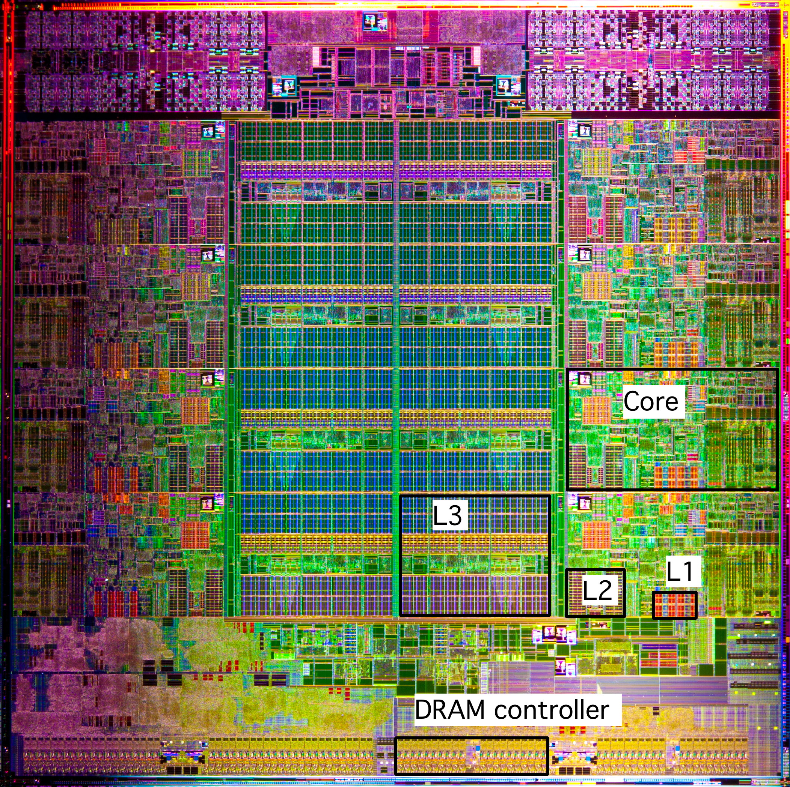WRAPFIGURE 1.1: The Intel Sandy Bridge processor die
{r}{3.5in}
1.2.1.1 Instruction handling
crumb trail: > sequential > Modern processors > The processing cores > Instruction handling
The Von Neumann model is also unrealistic in that it assumes that all instructions are executed strictly in sequence. Increasingly, over the last twenty years, processor have used out-of-order instruction handling, where instructions can be processed in a different order than the user program specifies. Of course the processor is only allowed to re-order instructions if that leaves the result of the execution intact!
In the block diagram (figure 1.2 ) you see various units that are concerned with instruction handling: This cleverness actually costs considerable energy, as well as sheer amount of transistors. For this reason, processors such as the first generation Intel Xeon Phi, the Knights Corner , used in-order instruction handling. However, in the next generation, the Knights Landing , this decision was reversed for reasons of performance.
1.2.1.2 Floating point units
crumb trail: > sequential > Modern processors > The processing cores > Floating point units
In scientific computing we are mostly interested in what a processor does with floating point data. Computing with integers or booleans is typically of less interest. For this reason, cores have considerable sophistication for dealing with numerical data.
For instance, while past processors had just a single FPU , these days they will have multiple, capable of executing simultaneously.
For instance, often there are separate addition and multiplication units; if the compiler can find addition and multiplication operations that are independent, it can schedule them so as to be executed simultaneously, thereby doubling the performance of the processor. In some cases, a processor will have multiple addition or multiplication units.
Another way to increase performance is to have a FMA unit, which can execute the instruction $x\leftarrow ax+b$ in the same amount of time as a separate addition or multiplication. Together with pipelining (see below), this means that a processor has an asymptotic speed of several floating point operations per clock cycle.
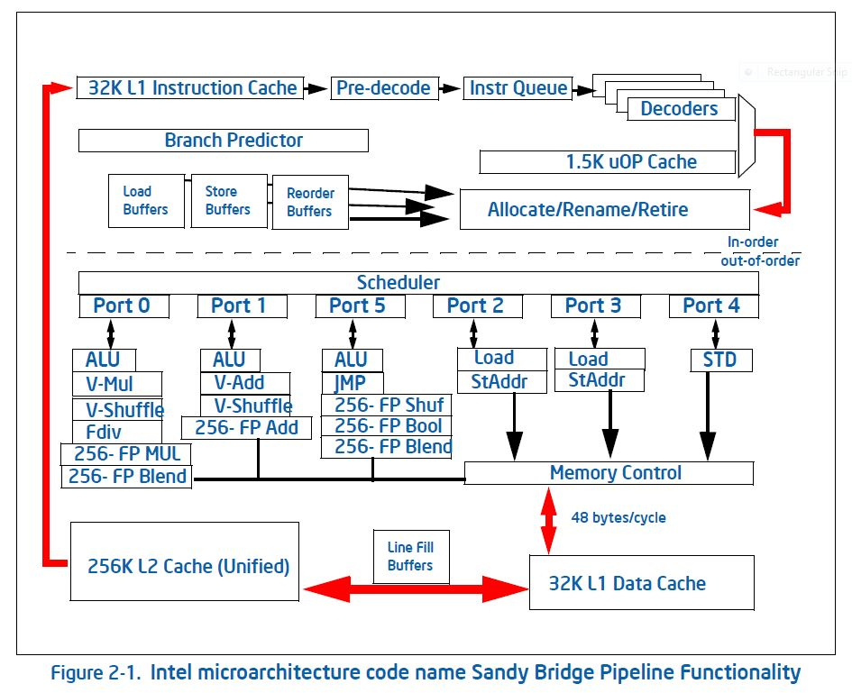FIGURE 1.2: Block diagram of the Intel Sandy Bridge core
\centering
| Processor | year | add/mult/fma units | daxpy cycles |
| (count$\times$width) | (arith vs load/store) | ||
| MIPS R10000 | 1996 | $1\times1+1\times1+0$ | 8/24 |
| Alpha EV5 | 1996 | $1\times1+1\times1+0$ | 8/12 |
| IBM Power5 | 2004 | $0+0+2\times1 $ | 4/12 |
| AMD Bulldozer | 2011 | $2\times2+2\times2+0$ | 2/4 |
| Intel Sandy Bridge | 2012 | $1\times4+1\times4+0$ | 2/4 |
| Intel Haswell | 2014 | $0+0+2\times 4 $ | 1/2 |
\caption{Floating point capabilities (per core) of several processor architectures, and DAXPY cycle number for 8 operands}
Incidentally, there are few algorithms in which division operations are a limiting factor. Correspondingly, the division operation is not nearly as much optimized in a modern CPU as the additions and multiplications are. Division operations can take 10 or 20 clock cycles, while a CPU can have multiple addition and/or multiplication units that (asymptotically) can produce a result per cycle.
1.2.1.3 Pipelining
crumb trail: > sequential > Modern processors > The processing cores > Pipelining
The floating point add and multiply units of a processor are pipelined, which has the effect that a stream of independent operations can be performed at an asymptotic speed of one result per clock cycle.
The idea behind a pipeline is as follows. Assume that an operation consists of multiple simpler operations, then we can potentially speed up the operation by using dedicated hardware for each suboperation. If we now have multiple operations to perform, we get a speedup by having all suboperations active simultaneously: each hands its result to the next and accepts its input(s) from the previous.
This description closely resembles that of a bucket brigade , or a systolic algorithm .For instance, an addition instruction can have the following components:
These parts are often called the `stages' or `segments' of the pipeline.
If every component is designed to finish in 1 clock cycle, the whole instruction takes 6 cycles. However, if each has its own hardware, we can execute two operations in less than 12 cycles:
You see that the first operation still takes 6 clock cycles, but the second one is finished a mere 1 cycle later.
Let us make a formal analysis of the speedup you can get from a pipeline. On a traditional FPU , producing $n$ results takes $t(n)=n\ell\tau$ where $\ell$ is the number of stages, and $\tau$ the clock cycle time. The rate at which results are produced is the reciprocal of $t(n)/n$: $r_{\mathrm{serial}}\equiv(\ell\tau)\inv$.
On the other hand, for a pipelined FPU the time is $t(n)=[s+\ell+n-1]\tau$ where $s$ is a setup cost: the first operation still has to go through the same stages as before, but after that one more result will be produced each cycle. We can also write this formula as \[ t(n)=[n+n_{1/2}]\tau, \] expressing the linear time, plus an offset.
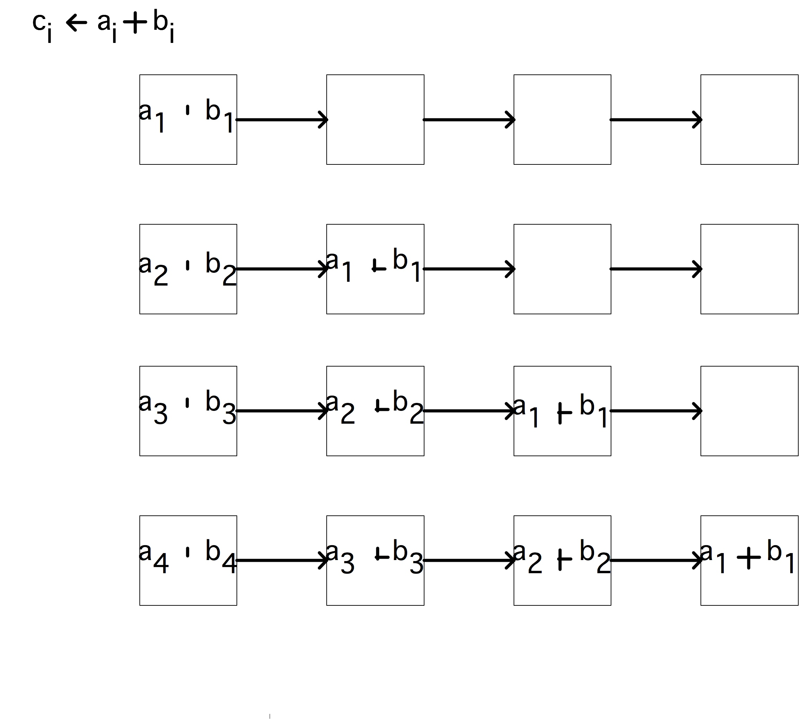
FIGURE 1.3: Schematic depiction of a pipelined operation
Let us compare the speed of a classical FPU , and a pipelined one. Show that the result rate is now dependent on $n$: give a formula for $r(n)$, and for $r_\infty=\lim_{n\rightarrow\infty}r(n)$. What is the asymptotic improvement in $r$ over the non-pipelined case?Next you can wonder how long it takes to get close to the asymptotic behavior. Show that for $n=n_{1/2}$ you get $r(n)=r_\infty/2$. This is often used as the definition of $n_{1/2}$.
Since a vector processor works on a number of instructions simultaneously, these instructions have to be independent. The operation $\forall_i\colon a_i\leftarrow b_i+c_i$ has independent additions; the operation $\forall_i\colon a_{i+1}\leftarrow a_ib_i+c_i$ feeds the result of one iteration ($a_i$) to the input of the next ($a_{i+1}=…$), so the operations are not independent.
A pipelined processor can speed up operations by a factor of $4,5,6$ with respect to earlier CPUs. Such numbers were typical in the 1980s when the first successful vector computers came on the market. These days, CPUs can have 20-stage pipelines. Does that mean they are incredibly fast? This question is a bit complicated. Chip designers continue to increase the clock rate, and the pipeline segments can no longer finish their work in one cycle, so they are further split up. Sometimes there are even segments in which nothing happens: that time is needed to make sure data can travel to a different part of the chip in time.
The amount of improvement you can get from a pipelined CPU is limited, so in a quest for ever higher performance several variations on the pipeline design have been tried. For instance, the Cyber 205 had separate addition and multiplication pipelines, and it was possible to feed one pipe into the next without data going back to memory first. Operations like $\forall_i\colon a_i\leftarrow b_i+c\cdot d_i$ were called `linked triads' (because of the number of paths to memory, one input operand had to be scalar).
Analyze the speedup and $n_{1/2}$ of linked triads.Another way to increase performance is to have multiple identical pipes. This design was perfected by the NEC SX series. With, for instance, 4 pipes, the operation $\forall_i\colon a_i\leftarrow b_i+c_i$ would be split module 4, so that the first pipe operated on indices $i=4\cdot j$, the second on $i=4\cdot j+1$, et cetera.
Analyze the speedup and $n_{1/2}$ of a processor with multiple pipelines that operate in parallel. That is, suppose that there are $p$ independent pipelines, executing the same instruction, that can each handle a stream of operands.(You may wonder why we are mentioning some fairly old computers here: true pipeline supercomputers hardly exist anymore. In the US, the Cray X1 was the last of that line, and in Japan only NEC still makes them. However, the functional units of a CPU these days are pipelined, so the notion is still important.)
The operation for (i) { x[i+1] = a[i]*x[i] + b[i]; }can not be handled by a pipeline because there is a dependency between input of one iteration of the operation and the output of the previous. However, you can transform the loop into one that is mathematically equivalent, and potentially more efficient to compute. Derive an expression that computes x[i+2] from x[i] without involving x[i+1] . This is known as doubling}. Assume you have plenty of temporary storage. You can now perform the calculation by
Analyze the efficiency of this scheme by giving formulas for $T_0(n)$ and $T_s(n)$. Can you think of an argument why the preliminary calculations may be of lesser importance in some circumstances?
1.2.1.3.1 Systolic computing
crumb trail: > sequential > Modern processors > The processing cores > Pipelining > Systolic computing
Pipelining as described above is one case of a systolic algorithm . In the 1980s and 1990s there was research into using pipelined algorithms and building special hardware, systolic array s, to implement them [Ku:systolic] . This is also connected to computing with FPGAs , where the systolic array is software-defined.
1.2.1.4 Peak performance
crumb trail: > sequential > Modern processors > The processing cores > Peak performance
Thanks to pipelining, for modern CPUs there is a simple relation between the clock speed and the peak performance . Since each FPU can produce one result per cycle asymptotically, the peak performance is the clock speed times the number of independent FPUs . The measure of floating point performance is `floating point operations per second', abbreviated flops . Considering the speed of computers these days, you will mostly hear floating point performance being expressed in `gigaflops': multiples of $10^9$ flops.
1.2.2 8-bit, 16-bit, 32-bit, 64-bit
crumb trail: > sequential > Modern processors > 8-bit, 16-bit, 32-bit, 64-bit
Processors are often characterized in terms of how big a chunk of data they can process as a unit. This can relate to
These measurements are not necessarily identical. For instance, the original Pentium processor had 64-bit data busses, but a 32-bit processor. On the other hand, the Motorola 68000 processor (of the original Apple Macintosh) had a 32-bit CPU , but 16-bit data busses.
The first Intel microprocessor, the 4004, was a 4-bit processor in the sense that it processed 4 bit chunks. These days, 64 bit processors are becoming the norm.
1.2.3 Caches: on-chip memory
crumb trail: > sequential > Modern processors > Caches: on-chip memory
The bulk of computer memory is in chips that are separate from the processor. However, there is usually a small amount (typically a few megabytes) of on-chip memory, called the cache . This will be explained in detail in section 1.3.4 .
1.2.4 Graphics, controllers, special purpose hardware
crumb trail: > sequential > Modern processors > Graphics, controllers, special purpose hardware
One difference between `consumer' and `server' type processors is that the consumer chips devote considerable real-estate on the processor chip to graphics. Processors for cell phones and tablets can even have dedicated circuitry for security or mp3 playback. Other parts of the processor are dedicated to communicating with memory or the I/O subsystem . We will not discuss those aspects in this book.
1.2.5 Superscalar processing and instruction-level parallelism
crumb trail: > sequential > Modern processors > Superscalar processing and instruction-level parallelism
In the von Neumann model processors operate through control flow : instructions follow each other linearly or with branches without regard for what data they involve. As processors became more powerful and capable of executing more than one instruction at a time, it became necessary to switch to the data flow model. Such superscalar processors analyze several instructions to find data dependencies, and execute instructions in parallel that do not depend on each other.
This concept is also known as ILP , and it is facilitated by various mechanisms:
Above, you saw pipelining in the context of floating point operations. Nowadays, the whole CPU is pipelined. Not only floating point operations, but any sort of instruction will be put in the instruction pipeline as soon as possible. Note that this pipeline is no longer limited to identical instructions: the notion of pipeline is now generalized to any stream of partially executed instructions that are simultaneously ``in flight''.
As clock frequency has gone up, the processor pipeline has grown in length to make the segments executable in less time. You have already seen that longer pipelines have a larger $n_{1/2}$, so more independent instructions are needed to make the pipeline run at full efficiency. As the limits to instruction-level parallelism are reached, making pipelines longer (sometimes called `deeper' ) no longer pays off. This is generally seen as the reason that chip designers have moved to multicore architectures as a way of more efficiently using the transistors on a chip; section 1.4 .
There is a second problem with these longer pipelines: if the code comes to a branch point (a conditional or the test in a loop), it is not clear what the next instruction to execute is. At that point the pipeline can stall . CPUs have taken to speculative execution for instance, by always assuming that the test will turn out true. If the code then takes the other branch (this is called a branch misprediction ), the pipeline has to be flushed and restarted. The resulting delay in the execution stream is called the branch penalty .
1.3 Memory Hierarchies
crumb trail: > sequential > Memory Hierarchies
We will now refine the picture of the Von Neumann architecture, in which data is loaded immediately from memory to the processors, where it is operated on. This picture is unrealistic because of the so-called memory wall [Wulf:memory-wall] : the memory is too slow to load data into the process at the rate the processor can absorb it. Specifically, a single load can take 1000 cycles, while a processor can perform several operations per cycle. (After this long wait for a load, the next load can come faster, but still too slow for the processor. This matter of wait time versus throughput will be addressed below in section 1.3.2 .)
In reality, there will be various memory levels in between the FPU and the main memory: the registers and the caches , together called the memory hierarchy . These try to alleviate the memory wall problem by making recently used data available quicker than it would be from main memory. Of course, this presupposes that the algorithm and its implementation allow for data to be used multiple times. Such questions of data reuse will be discussed in more detail in section 1.6.1 .
Both registers and caches are faster than main memory to various degrees; unfortunately, the faster the memory on a certain level, the smaller it will be. These differences in size and access speed lead to interesting programming problems, which we will discuss later in this chapter, and particularly section 1.7 .
We will now discuss the various components of the memory hierarchy and the theoretical concepts needed to analyze their behavior.
1.3.1 Busses
crumb trail: > sequential > Memory Hierarchies > Busses
The wires that move data around in a computer, from memory to cpu or to a disc controller or screen, are called busses . The most important one for us is the FSB which connects the processor to memory. In one popular architecture, this is called the `north bridge', as opposed to the `south bridge' which connects to external devices, with the exception of the graphics controller.
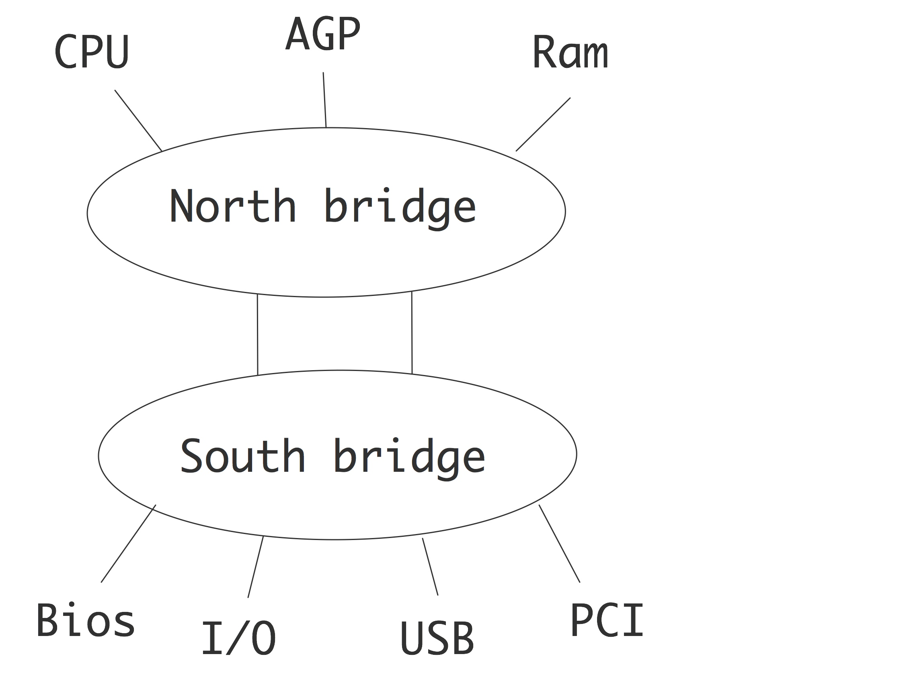FIGURE 1.4: Bus structure of a processor
The bus is typically slower than the processor, operating with clock frequencies slightly in excess of 1GHz, which is a fraction of the CPU clock frequency. This is one reason that caches are needed; the fact that a processors can consume many data items per clock tick contributes to this. Apart from the frequency, the bandwidth of a bus is also determined by the number of bits that can be moved per clock cycle. This is typically 64 or 128 in current architectures. We will now discuss this in some more detail.
1.3.2 Latency and Bandwidth
crumb trail: > sequential > Memory Hierarchies > Latency and Bandwidth
Above, we mentioned in very general terms that accessing data in registers is almost instantaneous, whereas loading data from memory into the registers, a necessary step before any operation, incurs a substantial delay. We will now make this story slightly more precise.
There are two important concepts to describe the movement of data: latency and bandwidth . The assumption here is that requesting an item of data incurs an initial delay; if this item was the first in a stream of data, usually a consecutive range of memory addresses, the remainder of the stream will arrive with no further delay at a regular amount per time period.
If a processor executes instructions in the order they are found in the assembly code, then execution will often stall while data is being fetched from memory; this is also called memory stall . For this reason, a low latency is very important. In practice, many processors have `out-of-order execution' of instructions, allowing them to perform other operations while waiting for the requested data. Programmers can take this into account, and code in a way that achieves latency hiding ; see also section 1.6.1 . GPUs (see section 2.9.3 ) can switch very quickly between threads in order to achieve latency hiding.
The concepts of latency and bandwidth are often combined in a formula for the time that a message takes from start to finish: \[ T(n) = \alpha+\beta n \] where $\alpha$ is the latency and $\beta$ is the inverse of the bandwidth: the time per byte.
Typically, the further away from the processor one gets, the longer the latency is, and the lower the bandwidth. These two factors make it important to program in such a way that, if at all possible, the processor uses data from cache or register, rather than from main memory. To illustrate that this is a serious matter, consider a vector addition
for (i) a[i] = b[i]+c[i]Each iteration performs one floating point operation, which modern CPUs can do in one clock cycle by using pipelines. However, each iteration needs two numbers loaded and one written, for a total of 24 bytes of memory traffic. (Actually, a[i] is loaded before it can be written, so there are 4 memory access, with a total of 32 bytes, per iteration.) Typical memory bandwidth figures (see for instance figure 1.5 ) are nowhere near 24 (or 32) bytes per cycle. This means that, without caches, algorithm performance can be bounded by memory performance. Of course, caches will not speed up every operations, and in fact will have no effect on the above example. Strategies for programming that lead to significant cache use are discussed in section 1.7 .
The concepts of latency and bandwidth will also appear in parallel computers, when we talk about sending data from one processor to the next.
1.3.3 Registers
crumb trail: > sequential > Memory Hierarchies > Registers
Every processor has a small amount of memory that is internal to the processor: the registers , or together the register file . The registers are what the processor actually operates on: an operation such as
a := b + cis actually implemented as
Looking at assembly code (for instance the output of a compiler), you see the explicit load, compute, and store instructions.
Compute instructions such as add or multiply only operate on registers. For instance, in assembly language you will see instructions such as
addl %eax, %edxwhich adds the content of one register to another. As you see in this sample instruction, registers are not numbered, as opposed to memory addresses, but have distinct names that are referred to in the assembly instruction. Typically, a processor has 16 or 32 floating point registers; the Intel Itanium was exceptional with 128 floating point registers.
Registers have a high bandwidth and low latency because they are part of the processor. You can consider data movement to and from registers as essentially instantaneous.
In this chapter you will see stressed that moving data from memory is relatively expensive. Therefore, it would be a simple optimization to leave data in register when possible. For instance, if the above computation is followed by a statement
a := b + c d := a + ethe computed value of a could be left in register. This optimization is typically performed as a compiler optimization : the compiler will simply not generate the instructions for storing and reloading a . We say that a stays resident in register .
Keeping values in register is often done to avoid recomputing a quantity. For instance, in
t1 = sin(alpha) * x + cos(alpha) * y; t2 = -cos(alpha) * x + sin(alpha) * y;the sine and cosine quantity will probably be kept in register. You can help the compiler by explicitly introducing temporary quantities:
s = sin(alpha); c = cos(alpha); t1 = s * x + c * y; t2 = -c * x + s * yOf course, there is a limit to how many quantities can be kept in register; trying to keep too many quantities in register is called register spill and lowers the performance of a code.
Keeping a variable in register is especially important if that variable appears in an inner loop. In the computation
for i=1,length a[i] = b[i] * cthe quantity c will probably be kept in register by the compiler, but in
for k=1,nvectors for i=1,length a[i,k] = b[i,k] * c[k]it is a good idea to introduce explicitly a temporary variable to hold c[k] . In C, you can give a hint to the compiler to keep a variable in register by declaring it as a register variable :
register double t;
1.3.4 Caches
crumb trail: > sequential > Memory Hierarchies > Caches
In between the registers, which contain the immediate input and output data for instructions, and the main memory where lots of data can reside for a long time, are various levels of cache memory, that have lower latency and higher bandwidth than main memory and where data are kept for an intermediate amount of time.
Data from memory travels through the caches to wind up in registers. The advantage to having cache memory is that if a data item is reused shortly after it was first needed, it will still be in cache, and therefore it can be accessed much faster than if it would have to be brought in from memory.
On a historical note, the notion of levels of memory hierarchy was already discussed in 1946 [Burks:discussion] , motivated by the slowness of the memory technology at the time.
1.3.4.1 A motivating example
crumb trail: > sequential > Memory Hierarchies > Caches > A motivating example
As an example, let's suppose a variable x is used twice, and its uses are too far apart that it would stay in}{register}:
... = ... x ..... // instruction using x ......... // several instructions not involving x ... = ... x ..... // instruction using xThe assembly code would then be
With a cache, the assembly code stays the same, but the actual behavior of the memory system now becomes:
Since loading from cache is faster than loading from main memory, the computation will now be faster. Caches are fairly small, so values can not be kept there indefinitely. We will see the implications of this in the following discussion.
There is an important difference between cache memory and registers: while data is moved into register by explicit assembly instructions, the move from main memory to cache is entirely done by hardware. Thus cache use and reuse is outside of direct programmer control. Later, especially in sections 1.6.2 and 1.7 , you will see how it is possible to influence cache use indirectly.
1.3.4.2 Cache tags
crumb trail: > sequential > Memory Hierarchies > Caches > Cache tags
In the above example, the mechanism was left unspecified by which it is found whether an item is present in cache. For this, there is a tag for each cache location: sufficient information to reconstruct the memory location that the cache item came from.
1.3.4.3 Cache levels, speed and size
crumb trail: > sequential > Memory Hierarchies > Caches > Cache levels, speed and size
The caches are called `level 1' and `level 2' (or, for short, L1 and L2) cache; some processors can have an L3 cache. The L1 and L2 caches are part of the die , the processor chip, although for the L2 cache that is a relatively recent development; the L3 cache is off-chip. The L1 cache is small, typically around 16Kbyte. Level 2 (and, when present, level 3) cache is more plentiful, up to several megabytes, but it is also slower. Unlike main memory, which is expandable, caches are fixed in size. If a version of a processor chip exists with a larger cache, it is usually considerably more expensive.
Data needed in some operation gets copied into the various caches on its way to the processor. If, some instructions later, a data item is needed again, it is first searched for in the L1 cache; if it is not found there, it is searched for in the L2 cache; if it is not found there, it is loaded from main memory. Finding data in cache is called a cache hit , and not finding it a cache miss .
Figure 1.5 illustrates the basic facts of the cache hierarchy , in this case for the Intel Sandy Bridge chip: the closer caches are to the FPUs , the faster, but also the smaller they are.
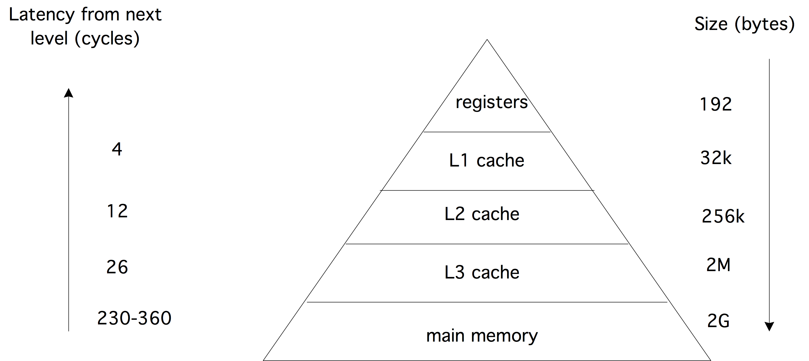FIGURE 1.5: Memory hierarchy of an Intel Sandy Bridge, characterized by speed and size.
Some points about this figure.
On level 1, there are separate caches for instructions and data; the L2 and L3 cache contain both data and instructions.
You see that the larger caches are increasingly unable to supply data to the processors fast enough. For this reason it is necessary to code in such a way that data is kept as much as possible in the highest cache level possible. We will discuss this issue in detail in the rest of this chapter.
The L1 cache is smaller than the L2 cache, and if there is an L3, the L2 is smaller than the L3. Give a practical and a theoretical reason why this is so.
1.3.4.4 Types of cache misses
crumb trail: > sequential > Memory Hierarchies > Caches > Types of cache misses
There are three types of cache misses.
As you saw in the example above, the first time you reference data you will always incur a cache miss. This is known as a compulsory cache miss since these are unavoidable. Does that mean that you will always be waiting for a data item, the first time you need it? Not necessarily: section 1.3.5 explains how the hardware tries to help you by predicting what data is needed next.
The next type of cache misses is due to the size of your working set: a capacity cache miss is caused by data having been overwritten because the cache can simply not contain all your problem data. (Section 1.3.4.6 discusses how the processor decides what data to overwrite.) If you want to avoid this type of misses, you need to partition your problem in chunks that are small enough that data can stay in cache for an appreciable time. Of course, this presumes that data items are operated on multiple times, so that there is actually a point in keeping it in cache; this is discussed in section 1.6.1 .
Finally, there are conflict misses caused by one data item being mapped to the same cache location as another, while both are still needed for the computation, and there would have been better candidates to evict. This is discussed in section 1.3.4.10 .
In a multicore context there is a further type of cache miss: the invalidation miss . This happens if an item in cache has become invalid because another core changed the value of the corresponding memory address. The core will then have to reload this address.
1.3.4.5 Reuse is the name of the game
crumb trail: > sequential > Memory Hierarchies > Caches > Reuse is the name of the game
The presence of one or more caches is not immediately a guarantee for high performance: this largely depends on the pattern} of the code, and how well this exploits the caches. The first time that an item is referenced, it is copied from memory into cache, and through to the processor registers. The latency and bandwidth for this are not mitigated in any way by the presence of a cache. When the same item is referenced a second time, it may be found in cache, at a considerably reduced cost in terms of latency and bandwidth: caches have shorter latency and higher bandwidth than main memory.
We conclude that, first, an algorithm has to have an opportunity for data reuse. If every data item is used only once (as in addition of two vectors), there can be no reuse, and the presence of caches is largely irrelevant. A code will only benefit from the increased bandwidth and reduced latency of a cache if items in cache are referenced more than once; see section 1.6.1 for a detailed discussion.. An example would be the matrix-vector multiplication $y=Ax$ where each element of $x$ is used in $n$ operations, where $n$ is the matrix dimension.
Secondly, an algorithm may theoretically have an opportunity for reuse, but it needs to be coded in such a way that the reuse is actually exposed. We will address these points in section 1.6.2 . This second point especially is not trivial.
Some problems are small enough that they fit completely in cache, at least in the L3 cache. This is something to watch out for when benchmarking , since it gives a too rosy picture of processor performance.
1.3.4.6 Replacement policies
crumb trail: > sequential > Memory Hierarchies > Caches > Replacement policies
Data in cache and registers is placed there by the system, outside of programmer control. Likewise, the system decides when to overwrite data in the cache or in registers if it is not referenced in a while, and as other data needs to be placed there. Below, we will go into detail on how caches do this, but as a general principle, a LRU cache replacement policy is used: if a cache is full and new data needs to be placed into it, the data that was least recently used is flushed from cache , meaning that it is overwritten with the new item, and therefore no longer accessible. LRU is by far the most common replacement policy; other possibilities are FIFO (first in first out) or random replacement.
How does the LRU replacement policy related to direct-mapped versus associative caches?Sketch a simple scenario, and give some (pseudo) code, to argue that LRU is preferable over FIFO as a replacement strategy.
1.3.4.7 Cache lines
crumb trail: > sequential > Memory Hierarchies > Caches > Cache lines
Data movement between memory and cache, or between caches, is not done in single bytes, or even words. Instead, the smallest unit of data moved is called a cache line , sometimes called a cache block . A typical cache line is 64 or 128 bytes long, which in the context of scientific computing implies 8 or 16 double precision floating point numbers. The cache line size for data moved into L2 cache can be larger than for data moved into L1 cache.
A first motivation for cache lines is a practical one: it simplifies the circuitry involved. Secondly, cachelines make sense since many codes show spatial locality ; section 1.6.2 .
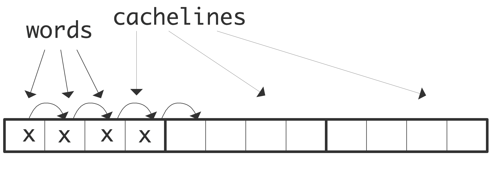WRAPFIGURE 1.6: Accessing 4 elements at stride 1
{r}{3in} Conversely, there is now a strong incentive to code in such a way to exploit this locality, since any memory access costs the transfer of several words (see section 1.7.4 for some examples). An efficient program then tries to use the other items on the cache line, since access to them is effectively free. This phenomenon is visible in code that accesses arrays by stride : elements are read or written at regular intervals.
Stride 1 corresponds to sequential access of an array:
for (i=0; i<N; i++) ... = ... x[i] ...Let us use as illustration a case with 4 words per cacheline. Requesting the first elements loads the whole cacheline that contains it into cache. A request for the 2nd, 3rd, and 4th element can then be satisfied from cache, meaning with high bandwidth and low latency. \bigskip
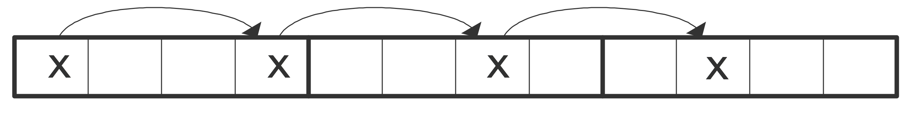WRAPFIGURE 1.7: Accessing 4 elements at stride 3
\vskip-.5in
{r}{3in} A larger stride
for (i=0; i<N; i+=stride) ... = ... x[i] ...implies that in every cache line only certain elements are used. We illustrate that with stride 3: requesting the first elements loads a cacheline, and this cacheline also contains the second element. However, the third element is on the next cacheline, so loading this incurs the latency and bandwidth of main memory. The same holds for the fourth element. Loading four elements now needed loading three cache lines instead of one, meaning that two-thirds of the available bandwidth has been wasted. (This second case would also incur three times the latency of the first, if it weren't for a hardware mechanism that notices the regular access patterns, and pre-emptively loads further cachelines; see section 1.3.5 .)
Some applications naturally lead to strides greater than 1, for instance, accessing only the real parts of an array of complex numbers (for some remarks on the practical realization of complex numbers see section 3.7.6 ). Also, methods that use recursive doubling often have a code structure that exhibits non-unit strides
for (i=0; i<N/2; i++) x[i] = y[2*i];In this discussion of cachelines, we have implicitly assumed the beginning of a cacheline is also the beginning of a word, be that an integer or a floating point number. This need not be true: an 8-byte floating point number can be placed straddling the boundary between two cachelines. You can image that this is not good for performance. Section sec:memalign discusses ways to address cacheline boundary alignment in practice.
1.3.4.8 Cache mapping
crumb trail: > sequential > Memory Hierarchies > Caches > Cache mapping
Caches get faster, but also smaller, the closer to the FPUs they get, yet even the largest cache is considerably smaller than the main memory size. In section 1.3.4.6 we have already discussed how the decision is made which elements to keep and which to replace.
We will now address the issue of cache mapping , which is the question of `if an item is placed in cache, where does it get placed'. This problem is generally addressed by mapping the (main memory) address of the item to an address in cache, leading to the question `what if two items get mapped to the same address'.
1.3.4.9 Direct mapped caches
crumb trail: > sequential > Memory Hierarchies > Caches > Direct mapped caches
The simplest cache mapping strategy is mapping}. Suppose that memory addresses are 32 bits long, so that they can address 4G bytes\footnote {We implicitly use the convention that K,M,G suffixes refer to powers of 2 rather than 10: 1K=1024, 1M=1,048,576, 1G=1,073,741,824.}; suppose further that the cache has 8K words, that is, 64K bytes, needing 16 bits to address. Direct mapping then takes from each memory address the last (`least significant') 16 bits,
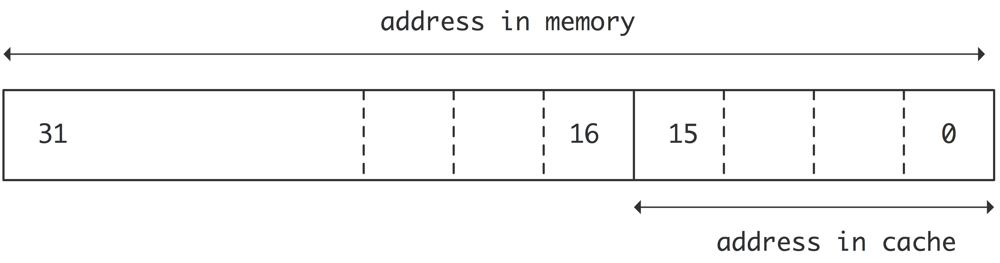FIGURE 1.8: Direct mapping of 32-bit addresses into a 64K cache
and uses these as the address of the data item in cache; see figure 1.8 .
Direct mapping is very efficient because its address calculations can be performed very quickly, leading to low latency, but it has a problem in practical applications. If two items are addressed that are separated by 8K words, they will be mapped to the same cache location, which will make certain calculations inefficient. Example:
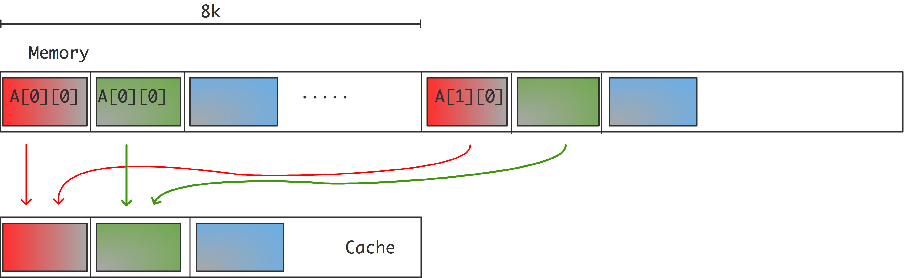FIGURE 1.9: Mapping conflicts in direct mapped cache
double A[3][8192]; for (i=0; i<512; i++) a[2][i] = ( a[0][i]+a[1][i] )/2.;or in Fortran:
real*8 A(8192,3); do i=1,512 a(i,3) = ( a(i,1)+a(i,2) )/2 end doHere, the locations of a[0][i] , a[1][i] , and a[2][i] (or a(i,1),a(i,2),a(i,3) ) are 8K from each other for every i , so the last 16 bits of their addresses will be the same, and hence they will be mapped to the same location in cache; see figure 1.9 .
The execution of the loop will now go as follows:
If a cache line holds four words, we see that each four iterations of the loop involve eight transfers of elements of a , where two would have sufficed, if it were not for the cache conflicts.
1.3.4.9 ) In the example of direct mapped caches, mapping from memory to cache was done by using the final 16 bits of a 32 bit memory address as cache address. Show that the problems in this example go away if the mapping is done by using the first (`most significant') 16 bits as the cache address. Why is this not a good solution in general?So far, we have pretended that caching is based on virtual memory addresses. In reality, caching is based on addresses} of the data in memory, which depend on the algorithm mapping virtual addresses to memory pages .
1.3.4.10 Associative caches
crumb trail: > sequential > Memory Hierarchies > Caches > Associative caches
The problem of cache conflicts, outlined in the previous section, would be solved if any data item could go to any cache location. In that case there would be no conflicts, other than the cache filling up, in which case a cache replacement policy (section 1.3.4.6 ) would flush data to make room for the incoming item. Such a cache is called fully associative , and while it seems optimal, it is also very costly to build, and much slower in use than a direct mapped cache.
For this reason, the most common solution is to have a $k$-way associative cache , where $k$ is at least two. In this case, a data item can go to any of $k$ cache locations. Code would have to have a $k+1$-way conflict before data would be flushed prematurely as in the above example. In that example, a value of $k=2$ would suffice, but in practice higher values are often encountered.
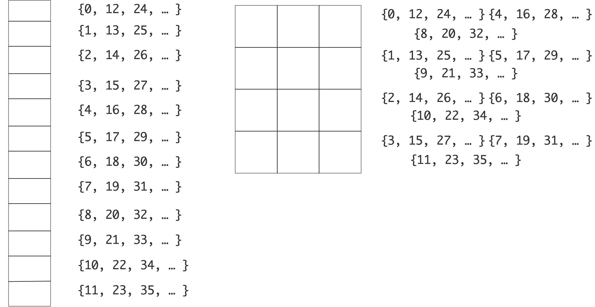FIGURE 1.10: Two caches of 12 elements: direct mapped (left) and 3-way associative (right)
Figure 1.10 illustrates the mapping of memory addresses to cache locations for a direct mapped and a 3-way associative cache. Both caches have 12 elements, but these are used differently. The direct mapped cache (left) will have a conflict between memory address 0 and 12, but in the 3-way associative cache these two addresses can be mapped to any of three elements.
As a practical example, the Intel Woodcrest processor has an L1 cache of 32K bytes that is 8-way set associative with a 64 byte cache line size, and an L2 cache of 4M bytes that is 8-way set associative with a 64 byte cache line size. On the other hand, the AMD Barcelona chip has 2-way associativity for the L1 cache, and 8-way for the L2. A higher associativity (`way-ness') is obviously desirable, but makes a processor slower, since determining whether an address is already in cache becomes more complicated. For this reason, the associativity of the L1 cache, where speed is of the greatest importance, is typically lower than of the L2.
Write a small cache simulator in your favorite language. Assume a $k$-way associative cache of 32 entries and an architecture with 16 bit addresses. Run the following experiment for $k=1,2,4,…$:Since the cache has 32 entries, optimally the 32 addresses can all be stored in cache. The chance of this actually happening is small, and often the data of one address will be evicted from the cache (meaning that it is overwritten) when another address conflicts with it. Record how many addresses, out of 32, are actually stored in the cache at the end of the simulation. Do step 1.10 100 times, and plot the results; give median and average value, and the standard deviation. Observe that increasing the associativity improves the number of addresses stored. What is the limit behavior? (For bonus points, do a formal statistical analysis.)
1.3.4.11 Cache memory versus regular memory
crumb trail: > sequential > Memory Hierarchies > Caches > Cache memory versus regular memory
So what's so special about cache memory; why don't we use its technology for all of memory?
Caches typically consist of SRAM , which is faster than DRAM used for the main memory, but is also more expensive, taking 5--6 transistors per bit rather than one, and it draws more power.
1.3.4.12 Loads versus stores
crumb trail: > sequential > Memory Hierarchies > Caches > Loads versus stores
In the above description, all data accessed in the program needs to be moved into the cache before the instructions using it can execute. This holds both for data that is read and data that is written. However, data that is written, and that will not be needed again (within some reasonable amount of time) has no reason for staying in the cache, potentially creating conflicts or evicting data that can still be reused. For this reason, compilers often have support for streaming stores : a contiguous stream of data that is purely output will be written straight to memory, without being cached.
1.3.5 Prefetch streams
crumb trail: > sequential > Memory Hierarchies > Prefetch streams
In the traditional von Neumann model (section 1.1 ), each instruction contains the location of its operands, so a CPU implementing this model would make a separate request for each new operand. In practice, often subsequent data items are adjacent or regularly spaced in memory. The memory system can try to detect such data patterns by looking at cache miss points, and request a prefetch data stream ;
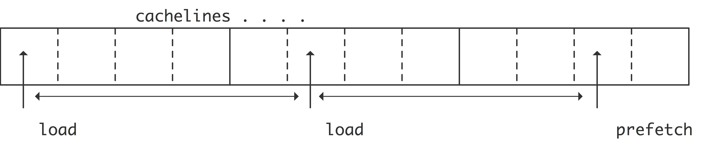FIGURE 1.11: Prefetch stream generated by equally spaced requests
figure 1.11 .
In its simplest form, the CPU will detect that consecutive loads come from two consecutive cache lines, and automatically issue a request for the next following cache line. This process can be repeated or extended if the code makes an actual request for that third cache line. Since these cache lines are now brought from memory well before they are needed, prefetch has the possibility of eliminating the latency for all but the first couple of data items.
The concept of cache miss now needs to be revisited a little. From a performance point of view we are only interested in stall s on cache misses, that is, the case where the computation has to wait for the data to be brought in. Data that is not in cache, but can be brought in while other instructions are still being processed, is not a problem. If an `L1 miss' is understood to be only a `stall on miss', then the term `L1 cache refill' is used to describe all cacheline loads, whether the processor is stalling on them or not.
Since prefetch is controlled by the hardware, it is also described as hardware prefetch . Prefetch streams can sometimes be controlled from software, for instance through intrinsics .
Introducing prefetch by the programmer is a careful balance of a number of factors [Guttman:prefetchKNC] . Prime among these is the prefetch distance : the number of cycles between the start of the prefetch and when the data is needed. In practice, this is often the number of iterations of a loop: the prefetch instruction requests data for a future iteration.
1.3.6 Concurrency and memory transfer
crumb trail: > sequential > Memory Hierarchies > Concurrency and memory transfer
In the discussion about the memory hierarchy we made the point that memory is slower than the processor. As if that is not bad enough, it is not even trivial to exploit all the bandwidth that memory offers. In other words, if you don't program carefully you will get even less performance than you would expect based on the available bandwidth. Let's analyze this.
The memory system typically has a bandwidth of more than one floating point number per cycle, so you need to issue that many requests per cycle to utilize the available bandwidth. This would be true even with zero latency; since there is latency, it takes a while for data to make it from memory and be processed. Consequently, any data requested based on computations on the first data has to be requested with a delay at least equal to the memory latency.
For full utilization of the bandwidth, at all times a volume of data equal to the bandwidth times the latency has to be in flight. Since these data have to be independent, we get a statement of law} [Little:law] : \[ \mathrm{Concurrency}=\mathrm{Bandwidth}\times \mathrm{Latency}. \]
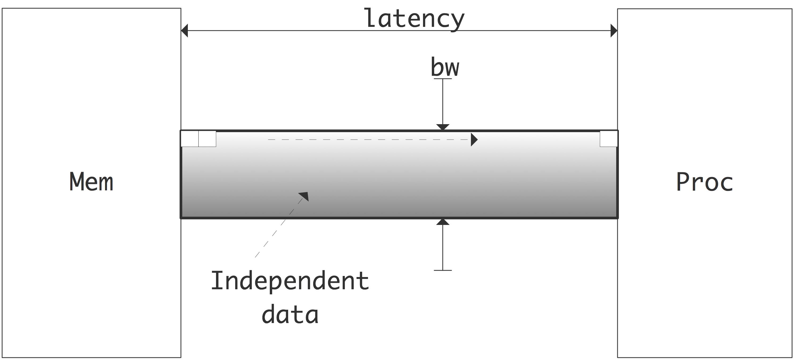\caption{Illustration of Little's Law that states how much independent data needs to be in flight}
This is illustrated in figure 1.12 . The problem with maintaining this concurrency is not that a program does not have it; rather, the program is to get the compiler and runtime system recognize it. For instance, if a loop traverses a long array, the compiler will not issue a large number of memory requests. The prefetch mechanism (section 1.3.5 ) will issue some memory requests ahead of time, but typically not enough. Thus, in order to use the available bandwidth, multiple streams of data need to be under way simultaneously. Therefore, we can also phrase Little's law as \[ \mathrm{Effective\ throughput}=\mathrm{Expressed\ concurrency} / \mathrm{Latency}. \]
1.3.7 Memory banks
crumb trail: > sequential > Memory Hierarchies > Memory banks
Above, we discussed issues relating to bandwidth. You saw that memory, and to a lesser extent caches, have a bandwidth that is less than what a processor can maximally absorb. The situation is actually even worse than the above discussion made it seem. For this reason, memory is often divided into memory banks that are interleaved: with four memory banks, words $0,4,8,…$ are in bank 0, words $1,5,9,…$ are in bank 1, et cetera.
Suppose we now access memory sequentially, then such 4-way interleaved memory can sustain four times the bandwidth of a single memory bank. Unfortunately, accessing by stride 2 will halve the bandwidth, and larger strides are even worse. If two consecutive operations access the same memory bank, we speak of a bank conflict [Bailey:conflict] . In practice the number of memory banks will be higher, so that strided memory access with small strides will still have the full advertised bandwidth. For instance, the Cray-1 had 16 banks, and the Cray-2 1024.
Show that with a prime number of banks, any stride up to that number will be conflict free. Why do you think this solution is not adopted in actual memory architectures?In modern processors, DRAM still has banks, but the effects of this are felt less because of the presence of caches. However, GPUs have memory banks and no caches, so they suffer from some of the same problems as the old supercomputers.
The recursive doubling algorithm for summing the elements of an array is: for (s=2; s<2*n; s*=2) for (i=0; i<n-s/2; i+=s) x[i] += x[i+s/2]Analyze bank conflicts for this algorithm. Assume $n=2^p$ and banks have $2^k$ elements where $k<p$. Also consider this as a parallel algorithm where all iterations of the inner loop are independent, and therefore can be performed simultaneously.
Alternatively, we can use recursive halving :
for (s=(n+1)/2; s>1; s/=2) for (i=0; i<n; i+=1) x[i] += x[i+s]Again analyze bank conficts. Is this algorithm better? In the parallel case?
Cache memory can also use banks. For instance, the cache lines in the L1 cache of the AMD Barcelona chip are 16 words long, divided into two interleaved banks of 8 words. This means that sequential access to the elements of a cache line is efficient, but strided access suffers from a deteriorated performance.
1.3.8 TLB, pages, and virtual memory
crumb trail: > sequential > Memory Hierarchies > TLB, pages, and virtual memory
All of a program's data may not be in memory simultaneously. This can happen for a number of reasons:
For this reason, computers use virtual memory : if more memory is needed than is available, certain blocks of memory are written to disc. In effect, the disc acts as an extension of the real memory. This means that a block of data can be anywhere in memory, and in fact, if it is swapped in and out, it can be in different locations at different times. Swapping does not act on individual memory locations, but rather on contiguous blocks of memory, from a few kilobytes to megabytes in size. (In an earlier generation of operating systems, moving memory to disc was a programmer's responsibility. Pages that would replace each other were called overlays .)
For this reason, we need a translation mechanism from the memory addresses that the program uses to the actual addresses in memory, and this translation has to be dynamic. A program has a `logical data space' (typically starting from address zero) of the addresses used in the compiled code, and this needs to be translated during program execution to actual memory addresses. For this reason, there is a page table that specifies which memory pages contain which logical pages.
1.3.8.1 Large pages
crumb trail: > sequential > Memory Hierarchies > TLB, pages, and virtual memory > Large pages
In very irregular applications, for instance databases, the page table can get very large as more-or-less random data is brought into memory. However, sometimes these pages show some amount of clustering, meaning that if the page size had been larger, the number of needed pages would be greatly reduced. For this reason, operating systems can have support for large pages , typically of size around 2Mb. (Sometimes `huge pages' are used; for instance the Intel Knights Landing has Gigabyte pages.)
The benefits of large pages are application-dependent: if the small pages have insufficient clustering, use of large pages may fill up memory prematurely with the unused parts of the large pages.
1.3.8.2 TLB
crumb trail: > sequential > Memory Hierarchies > TLB, pages, and virtual memory > TLB
However, address translation by lookup in this table is slow, so CPUs have a TLB . The TLB is a cache of frequently used Page Table Entries: it provides fast address translation for a number of pages. If a program needs a memory location, the TLB is consulted to see whether this location is in fact on a page that is remembered in the TLB . If this is the case, the logical address is translated to a physical one; this is a very fast process. The case where the page is not remembered in the TLB is called a TLB miss , and the page lookup table is then consulted, if necessary bringing the needed page into memory. The TLB is (sometimes fully) associative (section 1.3.4.10 ), using an LRU policy (section 1.3.4.6 ).
A typical TLB has between 64 and 512 entries. If a program accesses data sequentially, it will typically alternate between just a few pages, and there will be no TLB misses. On the other hand, a program that access many random memory locations can experience a slowdown because of such misses. The set of pages that is in current use is called the `working set'.
Section 1.7.5 and appendix sec:tlb-code discuss some simple code illustrating the behavior of the TLB .
[There are some complications to this story. For instance, there is usually more than one TLB . The first one is associated with the L2 cache, the second one with the L1. In the AMD Opteron , the L1 TLB has 48 entries, and is is fully (48-way) associative, while the L2 TLB has 512 entries, but is only 4-way associative. This means that there can actually be TLB conflicts. In the discussion above, we have only talked about the L2 TLB . The reason that this can be associated with the L2 cache, rather than with main memory, is that the translation from memory to L2 cache is deterministic.]
Use of large pages also reduces the number of potential TLB misses, since the working set of pages can be reduced.
1.4 Multicore architectures
crumb trail: > sequential > Multicore architectures
In recent years, the limits of performance have been reached for the traditional processor chip design.
One of the ways of getting a higher utilization out of a single processor chip is then to move from a strategy of further sophistication of the single processor, to a division of the chip into multiple processing `cores'. The separate cores can work on unrelated tasks, or, by introducing what is in effect data parallelism (section 2.3.1 ), collaborate on a common task at a higher overall efficiency [Olukotun:1996:single-chip] .
Another solution is Intel 's hyperthreading , which lets a processor mix the instructions of several instruction streams. The benefits of this are strongly dependent on the individual case. However, this same mechanism is exploited with great success in GPUs; see section 2.9.3 . For a discussion see section 2.6.1.9 .This solves the above two problems:
While the first multicore CPUs were simply two processors on the same die, later generations incorporated L3 or L2 caches that were shared between the two processor cores; see figure 1.13
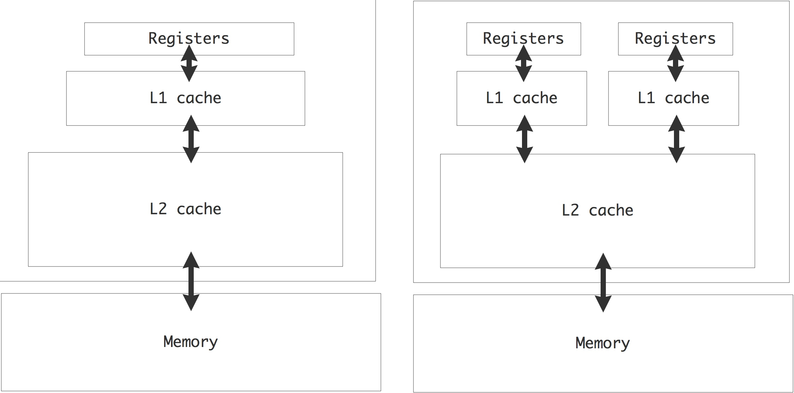FIGURE 1.13: Cache hierarchy in a single-core and dual-core chip
This design makes it efficient for the cores to work jointly on the same problem. The cores would still have their own L1 cache, and these separate caches lead to a cache coherence problem; see section 1.4.1 below.
We note that the term `processor' is now ambiguous: it can refer to either the chip, or the processor core on the chip. For this reason, we mostly talk about a socket for the whole chip and core for the part containing one arithmetic and logic unit and having its own registers. Currently, CPUs with 4 or 6 cores are common, even in laptops, and Intel and AMD are marketing 12-core chips. The core count is likely to go up in the future: Intel has already shown an 80-core prototype that is developed into the 48 core `Single-chip Cloud Computer', illustrated in fig 1.14 . This chip has a structure with 24 dual-core `tiles' that are connected through a 2D mesh network. Only certain tiles are connected to a memory controller, others can not reach memory other than through the on-chip network.
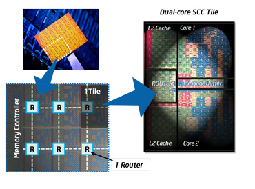 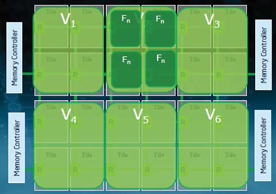FIGURE 1.14: Structure of the Intel Single-chip Cloud Computer chip
With this mix of shared and private caches, the programming model for multicore processors is becoming a hybrid between shared and distributed memory:
Historically, multicore architectures have a precedent in multiprocessor shared memory designs (section 2.4.1 ) such as the Sequent Symmetry and the FX/8}. Conceptually the program model is the same, but the technology now allows to shrink a multiprocessor board to a multicore chip.
1.4.1 Cache coherence
crumb trail: > sequential > Multicore architectures > Cache coherence
With parallel processing, there is the potential for a conflict if more than one processor has a copy of the same data item. The problem of ensuring that all cached data are an accurate copy of main memory is referred to as cache coherence : if one processor alters its copy, the other copy needs to be updated.
In distributed memory architectures, a dataset is usually partitioned disjointly over the processors, so conflicting copies of data can only arise with knowledge of the user, and it is up to the user to deal with the problem. The case of shared memory is more subtle: since processes access the same main memory, it would seem that conflicts are in fact impossible. However, processors typically have some private cache that contains copies of data from memory, so conflicting copies can occur. This situation arises in particular in multicore designs.
Suppose that two cores have a copy of the same data item in their (private) L1 cache, and one modifies its copy. Now the other has cached data that is no longer an accurate copy of its counterpart: the processor will invalidate that copy of the item, and in fact its whole cacheline. When the process needs access to the item again, it needs to reload that cacheline. The alternative is for any core that alters data to send that cacheline to the other cores. This strategy probably has a higher overhead, since other cores are not likely to have a copy of a cacheline.
This process of updating or invalidating cachelines is known as maintaining cache coherence , and it is done on a very low level of the processor, with no programmer involvement needed. (This makes updating memory locations an operation}; more about this in section 2.6.1.5 .) However, it will slow down the computation, and it wastes bandwidth to the core that could otherwise be used for loading or storing operands.
The state of a cache line with respect to a data item in main memory is usually described as one of the following:
A simpler variant of this is the MSI coherence protocol, where a cache line can be in the following states on a given core:
These states control the movement of cachelines between memory and the caches. For instance, suppose a core does a read to a cacheline that is invalid on that core. It can then load it from memory or get it from another cache, which may be faster. (Finding whether a line exists (in state M or S) on another cache is called snooping ; an alternative is to maintain cache directories; see below.) If the line is Shared, it can now simply be copied; if it is in state M in the other cache, that core first needs to write it back to memory.
Consider two processors, a data item $x$ in memory, and cachelines $x_1$,$x_2$ in the private caches of the two processors to which $x$ is mapped. Describe the transitions between the states of $x_1$ and $x_2$ under reads and writes of $x$ on the two processors. Also indicate which actions cause memory bandwidth to be used. (This list of transitions is a FSA ; see section app:fsa .)Variants of the MSI protocol add an `Exclusive' or `Owned' state for increased efficiency.
1.4.1.1 Solutions to cache coherence
crumb trail: > sequential > Multicore architectures > Cache coherence > Solutions to cache coherence
There are two basic mechanisms for realizing cache coherence: snooping and directory-based schemes.
In the snooping mechanism, any request for data is sent to all caches, and the data is returned if it is present anywhere; otherwise it is retrieved from memory. In a variation on this scheme, a core `listens in' on all bus traffic, so that it can invalidate or update its own cacheline copies when another core modifies its copy. Invalidating is cheaper than updating since it is a bit operation, while updating involves copying the whole cacheline.
When would updating pay off? Write a simple cache simulator to evaluate this question.Since snooping often involves broadcast information to all cores, it does not scale beyond a small number of cores. A solution that scales better is using a tag directory : a central directory that contains the information on what data is present in some cache, and what cache it is in specifically. For processors with large numbers of cores (such as the Intel Xeon Phi ) the directory can be distributed over the cores.
1.4.1.2 False sharing
crumb trail: > sequential > Multicore architectures > Cache coherence > False sharing
The cache coherence problem can even appear if the cores access different items. For instance, a declaration
double x,y;will likely allocate x and y next to each other in memory, so there is a high chance they fall on the same cacheline. Now if one core updates x and the other y , this cacheline will continuously be moved between the cores. This is called false sharing .
The most common case of false sharing happens when threads update consecutive locations of an array. For instance, in the following OpenMP fragment all threads update their own location in an array of partial results:
local_results = new double[num_threads]; #pragma omp parallel { int thread_num = omp_get_thread_num(); for (int i=my_lo; i<my_hi; i++) local_results[thread_num] = ... f(i) ... } global_result = g(local_results)While there is no actual race condition (as there would be if the threads all updated the global_result variable), this code will have low performance, since the cacheline(s) with the local_result array will continuously be invalidated.
1.4.1.3 Tag directories
crumb trail: > sequential > Multicore architectures > Cache coherence > Tag directories
In multicore processors with distributed, but coherent, caches (such as the Intel Xeon Phi ) the tag directories can themselves be distributed. This increases the latency of cache lookup.
1.4.2 Computations on multicore chips
crumb trail: > sequential > Multicore architectures > Computations on multicore chips
There are various ways that a multicore processor can lead to increased performance. First of all, in a desktop situation, multiple cores can actually run multiple programs. More importantly, we can use the parallelism to speed up the execution of a single code. This can be done in two different ways.
The MPI library (section 2.6.3.3 ) is typically used to communicate between processors that are connected through a network. However, it can also be used in a single multicore processor: the MPI calls then are realized through shared memory copies.
Alternatively, we can use the shared memory and shared caches and program using threaded systems such as OpenMP (section 2.6.2 ). The advantage of this mode is that parallelism can be much more dynamic, since the runtime system can set and change the correspondence between threads and cores during the program run.
We will discuss in some detail the scheduling of linear algebra operations on multicore chips; section 6.11 .
1.4.3 TLB shootdown
crumb trail: > sequential > Multicore architectures > TLB shootdown
Section 1.3.8.2 explained how the TLB is used to cache the translation from logical address, and therefore logical page, to physical page. The TLB is part of the memory unit of the socket , so in a multi-socket design, it is possible for a process on one socket to change the page mapping, which makes the mapping on the other incorrect.
One solution to this problem is called TLB shoot-down : the process changing the mapping generates an Inter-Processor Interrupt , which causes the other processors to rebuild their TLB.
1.5 Node architecture and sockets
crumb trail: > sequential > Node architecture and sockets
In the previous sections we have made our way down through the memory hierarchy, visiting registers and various cache levels, and the extent to which they can be private or shared. At the bottom level of the memory hierarchy is the memory that all cores share. This can range from a few Gigabyte on a lowly laptop to a few Terabyte in some supercomputer centers.
While this memory is shared between all cores, there is some structure to it. This derives from the fact that cluster node can have more than one socket , that is, processor chip.
\hbox{
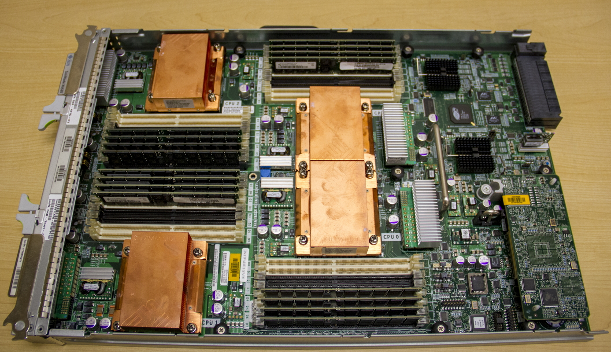
 }
}
FIGURE 1.15: Left: a four-socket design. Right: a two-socket design with co-processor.
The shared memory on the node is typically spread over banks that are directly attached to one particular socket. This is for instance illustrated in figure 1.15 , which shows the four-socket node of the TACC Ranger cluster supercomputer (no longer in production) and the two-socket node of the TACC Stampede cluster supercomputer which contains an Intel Xeon Phi co-processor. In both designs you clearly see the memory chips that are directly connected to the sockets.
This is an example of NUMA design: for a process running on some core, the memory attached to its socket is slightly faster to access than the memory attached to another socket.
One result of this is the first-touch phenomenon. Dynamically allocated memory is not actually allocated until it's first written to. Consider now the following OpenMP (section 2.6.2 ) code:
double *array = (double*)malloc(N*sizeof(double)); for (int i=0; i<N; i++) array[i] = 1; #pragma omp parallel for for (int i=0; i<N; i++) .... lots of work on array[i] ...Because of first-touch, the array is allocated completely in the memory of the socket of the main thread. In the subsequently parallel loop the cores of the other socket will then have slower access to the memory they operate on.
The solution here is to also make the initialization loop parallel, even if the amount of work in it may be negligible.
1.6 Locality and data reuse
crumb trail: > sequential > Locality and data reuse
By now it should be clear that there is more to the execution of an algorithm than counting the operations: the data transfer involved is important, and can in fact dominate the cost. Since we have caches and registers, the amount of data transfer can be minimized by programming in such a way that data stays as close to the processor as possible. Partly this is a matter of programming cleverly, but we can also look at the theoretical question: does the algorithm allow for it to begin with.
It turns out that in scientific computing data often interacts mostly with data that is close by in some sense, which will lead to data locality; section 1.6.2 . Often such locality derives from the nature of the application, as in the case of the PDEs you will see in chapter Numerical treatment of differential equations . In other cases such as molecular dynamics (chapter app:md ) there is no such intrinsic locality because all particles interact with all others, and considerable programming cleverness is needed to get high performance.
1.6.1 Data reuse and arithmetic intensity
crumb trail: > sequential > Locality and data reuse > Data reuse and arithmetic intensity
In the previous sections you learned that processor design is somewhat unbalanced: loading data is slower than executing the actual operations. This imbalance is large for main memory and less for the various cache levels. Thus we are motivated to keep data in cache and keep the amount of data reuse as high as possible.
Of course, we need to determine first if the computation allows for data to be reused. For this we define the arithmetic intensity of an algorithm as follows:
If $n$ is the number of data items that an algorithm operates on, and $f(n)$ the number of operations it takes, then the arithmetic intensity is $f(n)/n$.(We can measure data items in either floating point numbers or bytes. The latter possibility makes it easier to relate arithmetic intensity to hardware specifications of a processor.)
Arithmetic intensity is also related to latency hiding : the concept that you can mitigate the negative performance impact of data loading behind computational activity going on. For this to work, you need more computations than data loads to make this hiding effective. And that is the very definition of computational intensity: a high ratio of operations per byte/word/number loaded.
1.6.1.1 Example: vector operations
crumb trail: > sequential > Locality and data reuse > Data reuse and arithmetic intensity > Example: vector operations
Consider for example the vector addition \[ \forall_i\colon x_i\leftarrow x_i+y_i. \] This involves three memory accesses (two loads and one store) and one operation per iteration, giving a arithmetic intensity of $1/3$. The axpy (for ` a times x plus y ) operation \[ \forall_i\colon x_i\leftarrow a\,x_i+ y_i \] has two operations, but the same number of memory access since the one-time load of $a$ is amortized. It is therefore more efficient than the simple addition, with a reuse of $2/3$.
The inner product calculation \[ \forall_i\colon s\leftarrow s+x_i\cdot y_i \] is similar in structure to the axpy operation, involving one multiplication and addition per iteration, on two vectors and one scalar. However, now there are only two load operations, since $s$ can be kept in register and only written back to memory at the end of the loop. The reuse here is $1$.
1.6.1.2 Example: matrix operations
crumb trail: > sequential > Locality and data reuse > Data reuse and arithmetic intensity > Example: matrix operations
Next, consider the matrix-matrix product : \[ \forall_{i,j}\colon c_{ij} = \sum_k a_{ik}b_{kj}. \] This involves $3n^2$ data items and $2n^3$ operations, which is of a higher order. The arithmetic intensity is $O(n)$, meaning that every data item will be used $O(n)$ times. This has the implication that, with suitable programming, this operation has the potential of overcoming the bandwidth/clock speed gap by keeping data in fast cache memory.
The matrix-matrix product, considered as operation , clearly has data reuse by the above definition. Argue that this reuse is not trivially attained by a simple implementation. What determines whether the naive implementation has reuse of data that is in cache?[In this discussion we were only concerned with the number of operations of a given implementation , not the mathematical operation . For instance, there are ways of performing the matrix-matrix multiplication and Gaussian elimination algorithms in fewer than $O(n^3)$ operations [St:gaussnotoptimal,Pa:combinations] . However, this requires a different implementation, which has its own analysis in terms of memory access and reuse.]
The matrix-matrix product is the heart of the {benchmark} [Dongarra1987LinpackBenchmark] ; see section 2.11.6 . Using this as the sole measure of benchmarking a computer may give an optimistic view of its performance: the matrix-matrix product is an operation that has considerable data reuse, so it is relatively insensitive to memory bandwidth and, for parallel computers, properties of the network. Typically, computers will attain 60--90\% of their peak performance on the Linpack benchmark. Other benchmark may give considerably lower figures.
1.6.1.3 The roofline model
crumb trail: > sequential > Locality and data reuse > Data reuse and arithmetic intensity > The roofline model
There is an elegant way of talking about how arithmetic intensity, which is a statement about the ideal algorithm, not its implementation, interacts with hardware parameters and the actual implementation to determine performance. This is known as the roofline model [Williams:2009:roofline] , and it expresses the basic fact that performance is bounded by two factors, illustrated in the first graph of figure 1.16 .
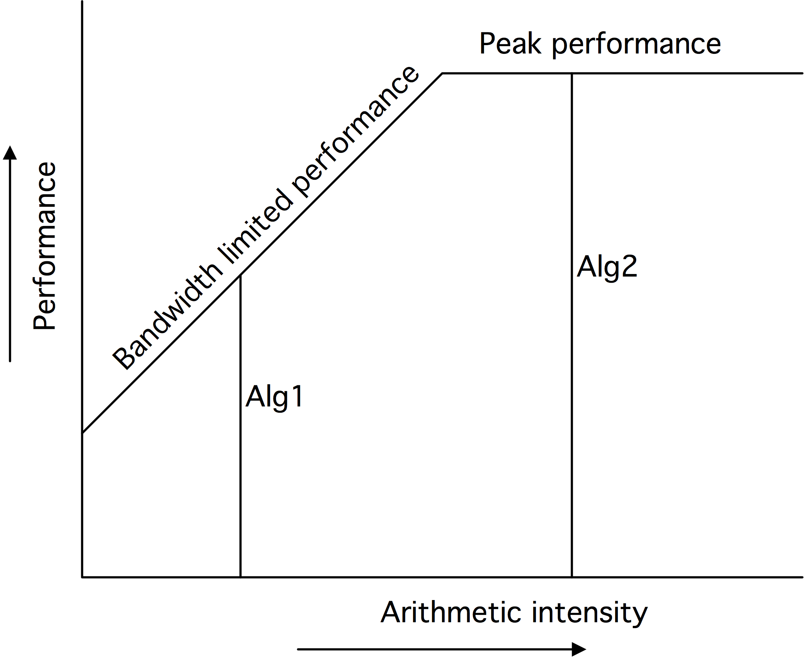 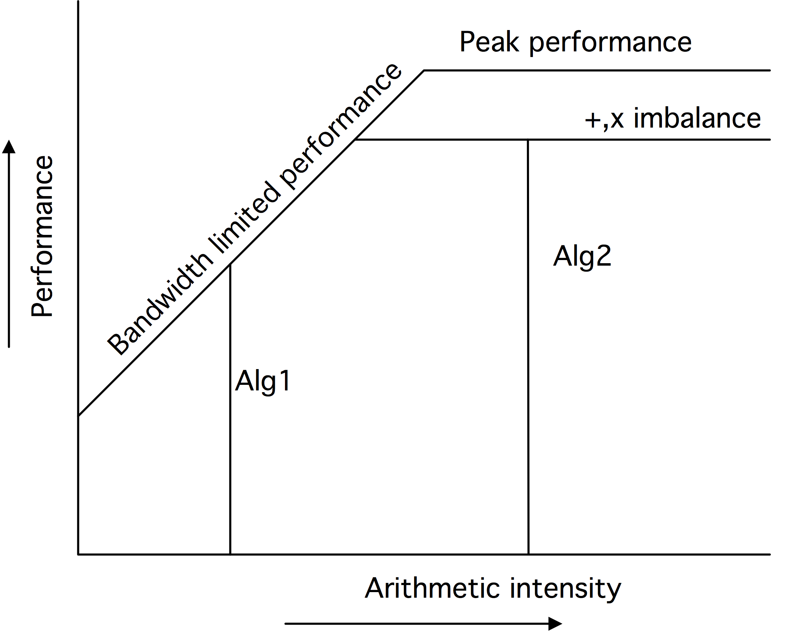 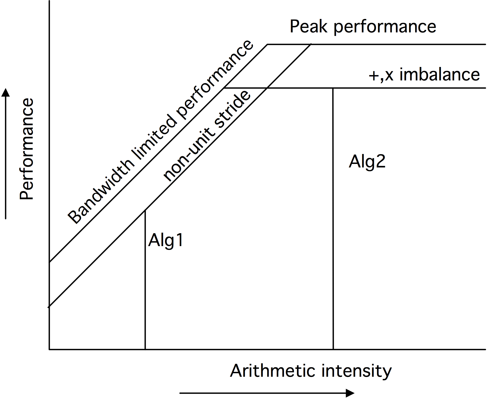
FIGURE 1.16: Illustration of factors determining performance in the roofline model
The roofline model is an elegant way of expressing that various factors lower the ceiling. For instance, if an algorithm fails to use the full SIMD width , this imbalance lowers the attainable peak. The second graph in figure 1.16 indicates various factors that lower the ceiling. There are also various factors that lower the available bandwidth, such as imperfect data hiding. This is indicated by a lowering of the sloping roofline in the third graph.
For a given arithmetic intensity, the performance is determined by where its vertical line intersects the roof line. If this is at the horizontal part, the computation is called compute-bound : performance is determined by characteristics of the processor, and bandwidth is not an issue. On the other hand, if that vertical line intersects the sloping part of the roof, the computation is called bandwidth-bound : performance is determined by the memory subsystem, and the full capacity of the processor is not used.
How would you determine whether a given program kernel is bandwidth or compute bound?
1.6.2 Locality
crumb trail: > sequential > Locality and data reuse > Locality
Since using data in cache is cheaper than getting data from main memory, a programmer obviously wants to code in such a way that data in cache is reused. While placing data in cache is not under explicit programmer control, even from assembly language (low level memory access can be controlled by the programmer in the Cell processor and in some GPUs.), in most CPUs , it is still possible, knowing the behavior of the caches, to know what data is in cache, and to some extent to control it.
The two crucial concepts here are temporal locality locality|see{locality, temporal}} and spatial locality spatial}}. Temporal locality is the easiest to explain: this describes the use of a data element within a short time of its last use. Since most caches have an LRU replacement policy (section 1.3.4.6 ), if in between the two references less data has been referenced than the cache size, the element will still be in cache and therefore be quickly accessible. With other replacement policies, such as random replacement, this guarantee can not be made.
1.6.2.1 Temporal locality
crumb trail: > sequential > Locality and data reuse > Locality > Temporal locality
As an example of temporal locality, consider the repeated use of a long vector:
for (loop=0; loop<10; loop++) { for (i=0; i<N; i++) { ... = ... x[i] ... } }Each element of x will be used 10 times, but if the vector (plus other data accessed) exceeds the cache size, each element will be flushed before its next use. Therefore, the use of x[i] does not exhibit temporal locality: subsequent uses are spaced too far apart in time for it to remain in cache.
If the structure of the computation allows us to exchange the loops:
for (i=0; i<N; i++) { for (loop=0; loop<10; loop++) { ... = ... x[i] ... } }the elements of x are now repeatedly reused, and are therefore more likely to remain in the cache. This rearranged code displays better temporal locality in its use of x[i] .
1.6.2.2 Spatial locality
crumb trail: > sequential > Locality and data reuse > Locality > Spatial locality
The concept of spatial locality is slightly more involved. A program is said to exhibit spatial locality if it references memory that is `close' to memory it already referenced. In the classical von Neumann architecture with only a processor and memory, spatial locality should be irrelevant, since one address in memory can be as quickly retrieved as any other. However, in a modern CPU with caches, the story is different. Above, you have seen two examples of spatial locality:
spatial locality is a decreasing function of the stride s .
Let S be the cacheline size, then as s ranges from $1…\mathtt{S}$, the number of elements used of each cacheline goes down from S to 1. Relatively speaking, this increases the cost of memory traffic in the loop: if $\mathtt{s}=1$, we load $1/\mathtt{S}$ cachelines per element; if $\mathtt{s}=\mathtt{S}$, we load one cacheline for each element. This effect is demonstrated in section 1.7.4 .
Consider the following pseudocode of an algorithm for summing $n$ numbers $x[i]$ where $n$ is a power of 2: for s=2,4,8,...,n/2,n: for i=0 to n-1 with steps s: x[i] = x[i] + x[i+s/2] sum = x[0]
Analyze the spatial and temporal locality of this algorithm, and contrast it with the standard algorithm
sum = 0 for i=0,1,2,...,n-1 sum = sum + x[i]Consider the following code, and assume that nvectors is small compared to the cache size, and length large. for (k=0; k<nvectors; k++) for (i=0; i<length; i++) a[k,i] = b[i] * c[k]
How do the following concepts relate to the performance of this code:
Would the following code where the loops are exchanged perform better or worse, and why?
for (i=0; i<length; i++) for (k=0; k<nvectors; k++) a[k,i] = b[i] * c[k]
1.6.2.3 Examples of locality
crumb trail: > sequential > Locality and data reuse > Locality > Examples of locality
Let us examine locality issues for a realistic example. The matrix-matrix multiplication $C\leftarrow A\cdot B$ can be computed in several ways. We compare two implementations, assuming that all matrices are stored by rows, and that the cache size is insufficient to store a whole row or column.
\hbox{%
\setbox0=\hbox{% for i=1..n for j=1..n for k=1..n c[i,j] += a[i,k]*b[k,j]{.4\textwidth} \ht0=1.2\ht0 \box0 \,
for i=1..n for k=1..n for j=1..n c[i,j] += a[i,k]*b[k,j]{.4\textwidth} }%
These implementations are illustrated in figure 1.17
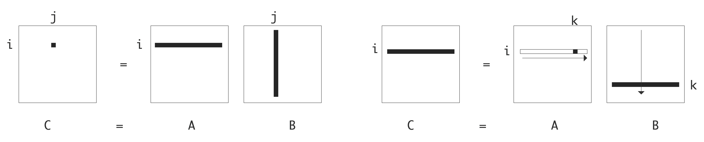\caption{Two loop orderings for the $C\leftarrow A\cdot B$ matrix-matrix product}
The first implementation constructs the $(i,j)$ element of $C$ by the inner product of a row of $A$ and a column of $B$, in the second a row of $C$ is updated by scaling rows of $B$ by elements of $A$.
Our first observation is that both implementations indeed compute $C\leftarrow C+A\cdot B$, and that they both take roughly $2n^3$ operations. However, their memory behavior, including spatial and temporal locality is very different.
In the second implementation, c[i,j] will be loaded and stored in each inner iteration. In particular, this implies that there are now $n^3$ store operations, a factor of $n$ more than the first implementation.
In second case, b[k,j] is access by rows so there is good spatial locality: cachelines will be fully utilized after they are loaded.
In the first implementation, b[k,j] is accessed by columns. Because of the row storage of the matrices, a cacheline contains a part of a row, so for each cacheline loaded, only one element is used in the columnwise traversal. This means that the first implementation has more loads for $B$ by a factor of the cacheline length. There may also be TLB effects.
Note that we are not making any absolute predictions on code performance for these implementations, or even relative comparison of their runtimes. Such predictions are very hard to make. However, the above discussion identifies issues that are relevant for a wide range of classical CPUs .
There are more algorithms for computing the product $C\leftarrow A\cdot B$. Consider the following: for k=1..n: for i=1..n: for j=1..n: c[i,j] += a[i,k]*b[k,j]Analyze the memory traffic for the matrix $C$, and show that it is worse than the two algorithms given above.
1.6.2.4 Core locality
crumb trail: > sequential > Locality and data reuse > Locality > Core locality
The above concepts of spatial and temporal locality were mostly properties of programs, although hardware properties such as cacheline length and cache size play a role in analyzing the amount of locality. There is a third type of locality that is more intimately tied to hardware: core locality .
A code's execution is said to exhibit core locality if write accesses that are spatially or temporally close are performed on the same core or processing unit. The issue here is that of cache coherence (section 1.4.1 ) where two cores both have a copy of a certain cacheline in their local stores. If they both read from it there is no problem. However, if one of them writes to it, the coherence protocol will copy the cacheline to the other core's local store. This takes up precious memory bandwidth, so it is to be avoided.
Core locality is not just a property of a program, but also to a large extent of how the program is executed in parallel.
1.7 Programming strategies for high performance
crumb trail: > sequential > Programming strategies for high performance
In this section we will look at how different ways of programming can influence the performance of a code. This will only be an introduction to the topic; for further discussion see the book by Goedeker and Hoisie~ [Goedeker:performance-book] .
The full listings of the codes and explanations of the data graphed here can be found in chapter~ app:codes . All performance results were obtained on the AMD Opteron processors of the TACC Ranger cluster ~ [tacc:ranger] .
1.7.1 Peak performance
crumb trail: > sequential > Programming strategies for high performance > Peak performance
For marketing purposes, it may be desirable to define a `top speed' for a CPU. Since a pipelined floating point unit can yield one result per cycle asymptotically, you would calculate the theoretical peak performance as the product of the clock speed (in ticks per second), number of floating point units, and the number of cores; see section~ 1.4 . This top speed is unobtainable in practice, and very few codes come even close to it. The Linpack benchmark is one of the measures how close you can get to it; the parallel version of this benchmark is reported in the `top 500'; see section~ 2.11.6 .
1.7.2 Pipelining
crumb trail: > sequential > Programming strategies for high performance > Pipelining
In section~ 1.2.1.3 you learned that the floating point units in a modern CPU are pipelined, and that pipelines require a number of independent operations to function efficiently. The typical pipelineable operation is a vector addition; an example of an operation that can not be pipelined is the inner product accumulation
for (i=0; i<N; i++) s += a[i]*b[i]The fact that s gets both read and written halts the addition pipeline. One way to fill the floating point pipeline is to apply
for (i = 0; i < N/2-1; i ++) { sum1 += a[2*i] * b[2*i]; sum2 += a[2*i+1] * b[2*i+1]; }Now there are two independent multiplies in between the accumulations. With a little indexing optimization this becomes:
for (i = 0; i < N/2-1; i ++) { sum1 += *(a + 0) * *(b + 0); sum2 += *(a + 1) * *(b + 1); a += 2; b += 2; }A first observation about this code is that we are implicitly using associativity and commutativity of addition: while the same quantities are added, they are now in effect added in a different order. As you will see in chapter Computer Arithmetic , in computer arithmetic this is not guaranteed to give the exact same result.
In a further optimization, we disentangle the addition and multiplication part of each instruction. The hope is that while the accumulation is waiting for the result of the multiplication, the intervening instructions will keep the processor busy, in effect increasing the number of operations per second.
for (i = 0; i < N/2-1; i ++) { temp1 = *(a + 0) * *(b + 0); temp2 = *(a + 1) * *(b + 1); sum1 += temp1; sum2 += temp2; a += 2; b += 2; }Finally, we realize that the furthest we can move the addition away from the multiplication, is to put it right in front of the multiplication of the next iteration :
for (i = 0; i < N/2-1; i ++) { sum1 += temp1; temp1 = *(a + 0) * *(b + 0); sum2 += temp2; temp2 = *(a + 1) * *(b + 1); a += 2; b += 2; } s = temp1 + temp2;Of course, we can unroll the operation by more than a factor of two. While we expect an increased performance because of the longer sequence of pipelined operations, large unroll factors need large numbers of registers. Asking for more registers than a CPU has is called register spill , and it will decrease performance.
Another thing to keep in mind is that the total number of operations is unlikely to be divisible by the unroll factor. This requires cleanup code after the loop to account for the final iterations. Thus, unrolled code is harder to write than straight code, and people have written tools to perform such source-to-source transformations automatically.
Cycle times for unrolling the inner product operation up to six times are given in table 1.7.2 . Note that the timings do not show a monotone behavior at the unrolling by four. This sort of variation is due to various memory-related factors.
\leavevmode\kern\unitindent
| 1 | 2 | 3 | 4 | 5 | 6\ |
| 6794 | 507 | 340 | 359 | 334 | 528\ |
\caption{Cycle times for the inner product operation, unrolled up to six times}
1.7.3 Cache size
crumb trail: > sequential > Programming strategies for high performance > Cache size
Above, you learned that data from L1 can be moved with lower latency and higher bandwidth than from L2, and L2 is again faster than L3 or memory. This is easy to demonstrate with code that repeatedly access the same data:
for (i=0; i<NRUNS; i++) for (j=0; j<size; j++) array[j] = 2.3*array[j]+1.2;If the size parameter allows the array to fit in cache, the operation will be relatively fast. As the size of the dataset grows, parts of it will evict other parts from the L1 cache, so the speed of the operation will be determined by the latency and bandwidth of the L2 cache. This can be seen in figure 1.18 .
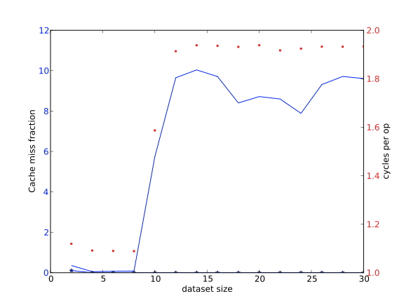\caption{Average cycle count per operation as function of the dataset size}
The full code is given in section sec:cachesize-code .
Argue that with a large enough problem and an LRU replacement policy (section 1.3.4.6 ) essentially all data in the L1 will be replaced in every iteration of the outer loop. Can you write an example code that will let some of the L1 data stay resident?Often, it is possible to arrange the operations to keep data in L1 cache. For instance, in our example, we could write
for (b=0; b<size/l1size; b++) { blockstart = 0; for (i=0; i<NRUNS; i++) { for (j=0; j<l1size; j++) array[blockstart+j] = 2.3*array[blockstart+j]+1.2; } blockstart += l1size; }assuming that the L1 size divides evenly in the dataset size. This strategy is called cache blocking or blocking for cache reuse .
Measure the number of memory accesses per cycle in the following loop, for various values of the cache size. If you observe that the time is independent of the cachesize, let your compiler generate an optimization report . For the Intel compiler use -qopt-report . for (int irepeat=0; irepeat<how_many_repeats; irepeat++) { for (int iword=0; iword<cachesize_in_words; iword++) memory[iword] += 1.1; }Argue what happened. Can you find a way to prevent the loop exchange?
To arrive at the blocked code, the loop over j was split into a loop over blocks and an inner loop over the elements of the block; the outer loop over i was then exchanged with the loop over the blocks. In this particular example you could also simply exchange the i and j loops. Why may this not be optimal for performance?
Blocked code may change the order of evaluation of expressions. Since floating point arithmetic is not associative % , blocking is not a transformation that compilers are allowed to make.
1.7.4 Cache lines and striding
crumb trail: > sequential > Programming strategies for high performance > Cache lines and striding
Since data is moved from memory to cache in consecutive chunks named cachelines (see section 1.3.4.7 ), code that does not utilize all data in a cacheline pays a bandwidth penalty. This is born out by a simple code
for (i=0,n=0; i<L1WORDS; i++,n+=stride) array[n] = 2.3*array[n]+1.2;Here, a fixed number of operations is performed, but on elements that are at distance stride . As this stride increases, we expect an increasing runtime, which is born out by
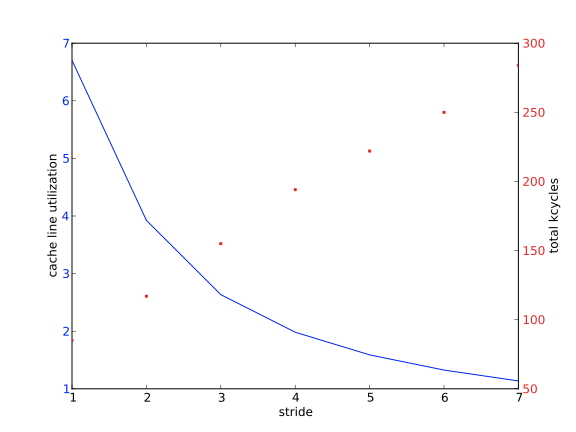FIGURE 1.19: Run time in kcycles and L1 reuse as a function of stride
the graph in figure 1.19 .
The graph also shows a decreasing reuse of cachelines, defined as the number of vector elements divided by the number of L1 misses (on stall; see section 1.3.5 ).
The full code is given in section sec:cacheline-code .
The effects of striding can be mitigated by the bandwidth and cache behavior of a processor. Consider some run on the Intel Cascadelake processor of the Frontera cluster at TACC, (28-cores per socket, dual socket, for a total of 56 cores per node). We measure the time-per-operation on a simple streaming kernel, using increasing strides. Table 1.19 reports in the second column indeed a per-operation time that goes up linearly with the stride.
| stride | nsec/word | ||
| 56 cores, 3M | 56 cores, .3M | 28 cores, 3M | |
| 1 | 7.268 | 1.368 | 1.841 |
| 2 | 13.716 | 1.313 | 2.051 |
| 3 | 20.597 | 1.319 | 2.852 |
| 4 | 27.524 | 1.316 | 3.259 |
| 5 | 34.004 | 1.329 | 3.895 |
| 6 | 40.582 | 1.333 | 4.479 |
| 7 | 47.366 | 1.331 | 5.233 |
| 8 | 53.863 | 1.346 | 5.773 |
TABLE: Time per operation in nanoseconds as a function of striding on 56 cores of Frontera, per-core datasize 3.2M
However, this is for a dataset that overflows the L2 cache. If we make this run contained in the L2 cache, as reported in the 3rd column, this increase goes away as there is enough bandwdidth available to stream strided data at full speed from L2 cache.
1.7.5 TLB
crumb trail: > sequential > Programming strategies for high performance > TLB
As explained in section 1.3.8.2 , the TLB maintains a small list of frequently used memory pages and their locations; addressing data that are location on one of these pages is much faster than data that are not. Consequently, one wants to code in such a way that the number of pages accessed is kept low.
Consider code for traversing the elements of a two-dimensional array in two different ways.
#define INDEX(i,j,m,n) i+j*m array = (double*) malloc(m*n*sizeof(double)); /* traversal #1 */ for (j=0; j<n; j++) for (i=0; i<m; i++) array[INDEX(i,j,m,n)] = array[INDEX(i,j,m,n)]+1; /* traversal #2 */ for (i=0; i<m; i++) for (j=0; j<n; j++) array[INDEX(i,j,m,n)] = array[INDEX(i,j,m,n)]+1;The results (see Appendix sec:tlb-code for the source code) are plotted in figures 1.21 and 1.20 .
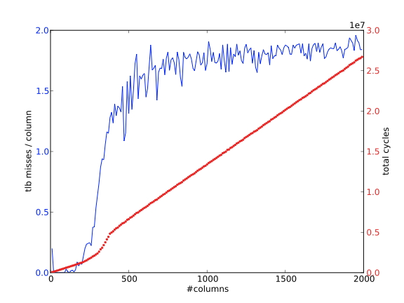\caption{Number of TLB misses per column as function of the number of columns; columnwise traversal of the array.} 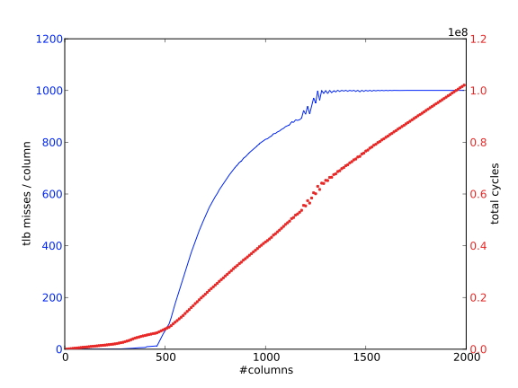
\caption{Number of TLB misses per column as function of the number of columns; rowwise traversal of the array.}
Using $m=1000$ means that, on the AMD Opteron which has pages of $512$ doubles, we need roughly two pages for each column. We run this example, plotting the number `TLB misses', that is, the number of times a page is referenced that is not recorded in the TLB.
1.7.6 Cache associativity
crumb trail: > sequential > Programming strategies for high performance > Cache associativity
There are many algorithms that work by recursive division of a problem, for instance the FFT algorithm. As a result, code for such algorithms will often operate on vectors whose length is a power of two. Unfortunately, this can cause conflicts with certain architectural features of a CPU, many of which involve powers of two.
In section 1.3.4.9 you saw how the operation of adding a small number of vectors \[ \forall_j\colon y_j= y_j+\sum_{i=1}^mx_{i,j} \] is a problem for direct mapped caches or set-associative caches with associativity.
As an example we take the AMD Opteron , which has an L1 cache of 64K bytes, and which is two-way set associative. Because of the set associativity, the cache can handle two addresses being mapped to the same cache location, but not three or more. Thus, we let the vectors be of size $n=4096$ doubles, and we measure the effect in cache misses and cycles of letting $m=1,2,…$.
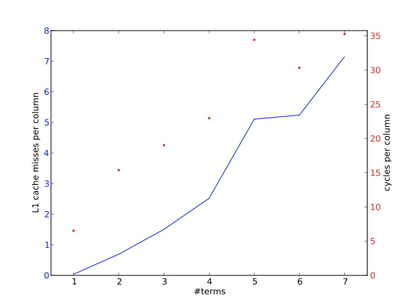\caption{The number of L1 cache misses and the number of cycles for each $j$ column accumulation, vector length $4096$}
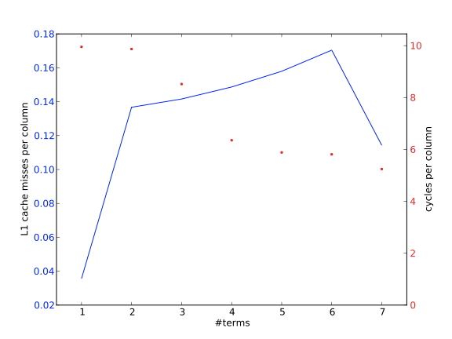
\caption{The number of L1 cache misses and the number of cycles for each $j$ column accumulation, vector length $4096+8$}
First of all, we note that we use the vectors sequentially, so, with a cacheline of eight doubles, we should ideally see a cache miss rate of $1/8$ times the number of vectors $m$. Instead, in figure 1.22 we see a rate approximately proportional to $m$, meaning that indeed cache lines are evicted immediately. The exception here is the case $m=1$, where the two-way associativity allows the cachelines of two vectors to stay in cache.
Compare this to figure 1.23 , where we used a slightly longer vector length, so that locations with the same $j$ are no longer mapped to the same cache location. As a result, we see a cache miss rate around $1/8$, and a smaller number of cycles, corresponding to a complete reuse of the cache lines.
Two remarks: the cache miss numbers are in fact lower than the theory predicts, since the processor will use prefetch streams. Secondly, in figure 1.23 we see a decreasing time with increasing $m$; this is probably due to a progressively more favorable balance between load and store operations. Store operations are more expensive than loads, for various reasons.
1.7.7 Loop nests
crumb trail: > sequential > Programming strategies for high performance > Loop nests
If your code has nested loops , and the iterations of the outer loop are independent, you have a choice which loop to make outer and which to make inner.
Give an example of a doubly-nested loop where the loops can be exchanged; give an example where this can not be done. If at all possible, use practical examples from this book.If you have such choice, there are many factors that can influence your decision.
Programming language: C versus Fortran
If your loop describes the $(i,j)$ indices of a two-dimensional array,
it is often best to let the $i$-index be in the inner loop for
Fortran, and the $j$-index inner for C.
However, this is not a hard-and-fast rule. It can depend on the size of the loops, and other factors. For instance, in the matrix-vector product, changing the loop ordering changes how the input and output vectors are used.
Parallelism model
If you want to parallelize your loops with
OpenMP
, you
generally want the outer loop to be larger than the inner. Having a
very short outer loop is definitely bad. A short inner loop can also
often be
vectorized by the compiler
.
On the other hand, if you are targeting a GPU , you want the large loop to be the inner one. The unit of parallel work should not have branches or loops.
1.7.8 Loop tiling
crumb trail: > sequential > Programming strategies for high performance > Loop tiling
In some cases performance can be increased by breaking up a loop into two nested loops, an outer one for the blocks in the iteration space, and an inner one that goes through the block. This is known as consecutive instances of which form the iteration space.
For instance
for (i=0; i<n; i++) ...becomes
bs = ... /* the blocksize */ nblocks = n/bs /* assume that n is a multiple of bs */ for (b=0; b<nblocks; b++) for (i=b*bs,j=0; j<bs; i++,j++) ...For a single loop this may not make any difference, but given the right context it may. For instance, if an array is repeatedly used, but it is too large to fit into cache:
for (n=0; n<10; n++) for (i=0; i<100000; i++) ... = ...x[i] ...then loop tiling may lead to a situation where the array is divided into blocks that will fit in cache:
bs = ... /* the blocksize */ for (b=0; b<100000/bs; b++) for (n=0; n<10; n++) for (i=b*bs; i<(b+1)*bs; i++) ... = ...x[i] ...For this reason, loop tiling is also known as cache blocking . The block size depends on how much data is accessed in the loop body; ideally you would try to make data reused in L1 cache, but it is also possible to block for L2 reuse. Of course, L2 reuse will not give as high a performance as L1 reuse.
Analyze this example. When is x brought into cache, when is it reused, and when is it flushed? What is the required cache size in this example? Rewrite this example, using a constant #define L1SIZE 65536For a less trivial example, let's look at matrix transposition $A\leftarrow B^t$. Ordinarily you would traverse the input and output matrices:
// regular.c
for (int i=0; i<N; i++)
for (int j=0; j<N; j++)
A[i][j] += B[j][i];
// blocked.c
for (int ii=0; ii<N; ii+=blocksize)
for (int jj=0; jj<N; jj+=blocksize)
for (int i=ii*blocksize; i<MIN(N,(ii+1)*blocksize); i++)
for (int j=jj*blocksize; j<MIN(N,(jj+1)*blocksize); j++)
A[i][j] += B[j][i];
FIGURE 1.24: Regular and blocked traversal of a matrix
Figure 1.24 shows how one of the matrices is traversed in a different order from its storage order, for instance columnwise while it is stored by rows. This has the effect that each element load transfers a cacheline, of which only one element is immediately used. In the regular traversal, this streams of cachelines quickly overflows the cache, and there is no reuse. In the blocked traversal, however, only a small number of cachelines is traversed before the next element of these lines is needed. Thus there is reuse of cachelines, or spatial locality .
The most important example of attaining performance through blocking is the matrix!matrix product!tiling . In section 1.6.2 we looked at the matrix-matrix multiplication, and concluded that little data could be kept in cache. With loop tiling we can improve this situation. For instance, the standard way of writing this product
for i=1..n for j=1..n for k=1..n c[i,j] += a[i,k]*b[k,j]can only be optimized to keep c[i,j] in register:
for i=1..n for j=1..n s = 0 for k=1..n s += a[i,k]*b[k,j] c[i,j] += sUsing loop tiling we can keep parts of a[i,:] in cache, assuming that a is stored by rows:
for kk=1..n/bs for i=1..n for j=1..n s = 0 for k=(kk-1)*bs+1..kk*bs s += a[i,k]*b[k,j] c[i,j] += s
1.7.9 Optimization strategies
crumb trail: > sequential > Programming strategies for high performance > Optimization strategies
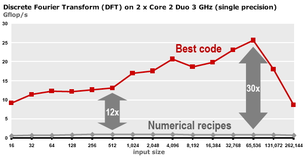
FIGURE 1.25: Performance of naive and optimized implementations of the Discrete Fourier Transform
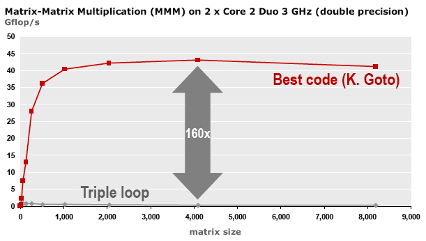
FIGURE 1.26: Performance of naive and optimized implementations of the matrix-matrix product
Figures 1.25 and 1.26 show that there can be wide discrepancy between the performance of naive implementations of an operation (sometimes called the `reference implementation'), and optimized implementations. Unfortunately, optimized implementations are not simple to find. For one, since they rely on blocking, their loop nests are double the normal depth: the matrix-matrix multiplication becomes a six-deep loop. Then, the optimal block size is dependent on factors like the target architecture.
We make the following observations:
.
1.7.10 Cache aware and cache oblivious programming
crumb trail: > sequential > Programming strategies for high performance > Cache aware and cache oblivious programming
Unlike registers and main memory, both of which can be addressed in (assembly) code, use of caches is implicit. There is no way a programmer can load data explicitly to a certain cache, even in assembly language.
However, it is possible to code in a `cache aware' manner. Suppose a piece of code repeatedly operates on an amount of data that is less than the cache size. We can assume that the first time the data is accessed, it is brought into cache; the next time it is accessed it will already be in cache. On the other hand, if the amount of data is more than the cache size
{We are conveniently ignoring matters of set-associativity here, and basically assuming a fully associative cache.} ), it will partly or fully be flushed out of cache in the process of accessing it.
We can experimentally demonstrate this phenomenon. With a very accurate counter, the code fragment
for (x=0; x<NX; x++) for (i=0; i<N; i++) a[i] = sqrt(a[i]);will take time linear in N up to the point where a fills the cache. An easier way to picture this is to compute a normalized time, essentially a time per execution of the inner loop:
t = time(); for (x=0; x<NX; x++) for (i=0; i<N; i++) a[i] = sqrt(a[i]); t = time()-t; t_normalized = t/(N*NX);The normalized time will be constant until the array a fills the cache, then increase and eventually level off again. (See section 1.7.3 for an elaborate discussion.)
The explanation is that, as long as a[0]...a[N-1] fit in L1 cache, the inner loop will use data from the L1 cache. Speed of access is then determined by the latency and bandwidth of the L1 cache. As the amount of data grows beyond the L1 cache size, some or all of the data will be flushed from the L1, and performance will be determined by the characteristics of the L2 cache. Letting the amount of data grow even further, performance will again drop to a linear behavior determined by the bandwidth from main memory.
If you know the cache size, it is possible in cases such as above to arrange the algorithm to use the cache optimally. However, the cache size is different per processor, so this makes your code not portable, or at least its high performance is not portable. Also, blocking for multiple levels of cache is complicated. For these reasons, some people advocate cache oblivious programming [Frigo:oblivious] .
Cache oblivious programming can be described as a way of programming that automatically uses all levels of the cache hierarchy . This is typically done by using a divide-and-conquer strategy, that is, recursive subdivision of a problem.
As a simple example of cache oblivious programming is the {transposition} operation $B\leftarrow A^t$. First we observe that each element of either matrix is accessed once, so the only reuse is in the utilization of cache lines. If both matrices are stored by rows and we traverse $B$ by rows, then $A$ is traversed by columns, and for each element accessed one cacheline is loaded. If the number of rows times the number of elements per cacheline is more than the cachesize, lines will be evicted before they can be reused.
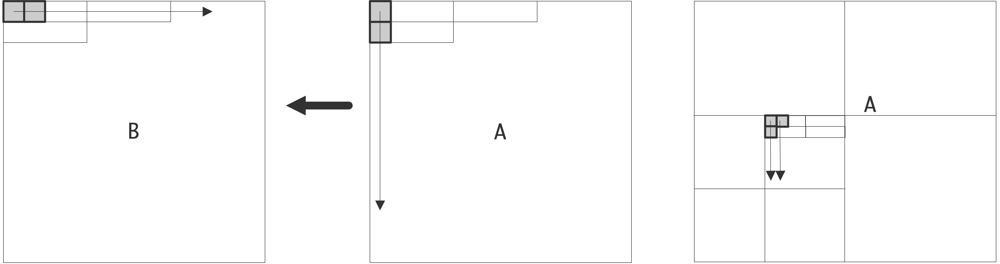\caption{Matrix transpose operation, with simple and recursive traversal of the source matrix}
In a cache oblivious implementation we divide $A$ and $B$ as $2\times2$ block matrices, and recursively compute $B_{11}\leftarrow A_{11}^t$, $B_{12}\leftarrow A_{21}^t$, et cetera; see figure 1.27 . At some point in the recursion, blocks $A_{ij}$ will now be small enough that they fit in cache, and the cachelines of $A$ will be fully used. Hence, this algorithm improves on the simple one by a factor equal to the cacheline size.
The cache oblivious strategy can often yield improvement, but it is not necessarily optimal. In the matrix-matrix product it improves on the naive algorithm, but it is not as good as an algorithm that is explicitly designed to make optimal use of caches [GotoGeijn:2008:Anatomy] .
See section 6.8.4 for a discussion of such techniques in stencil computations.
1.7.11 Case study: Matrix-vector product
crumb trail: > sequential > Programming strategies for high performance > Case study: Matrix-vector product
Let us consider in some detail the matrix-vector product \[ \forall_{i,j}\colon y_i\leftarrow a_{ij}\cdot x_j \] This involves $2n^2$ operations on $n^2+2n$ data items, so reuse is $O(1)$: memory accesses and operations are of the same order. However, we note that there is a double loop involved, and the $x,y$ vectors have only a single index, so each element in them is used multiple times.
Exploiting this theoretical reuse is not trivial. In
/* variant 1 */ for (i) for (j) y[i] = y[i] + a[i][j] * x[j];the element y[i] seems to be reused. However, the statement as given here would write y[i] to memory in every inner iteration, and we have to write the loop as
/* variant 2 */ for (i) { s = 0; for (j) s = s + a[i][j] * x[j]; y[i] = s; }to ensure reuse. This variant uses $2n^2$ loads and $n$ stores.
This code fragment only exploits the reuse of y explicitly. If the cache is too small to hold the whole vector x plus a column of a , each element of x is still repeatedly loaded in every outer iteration.
Reversing the loops as
/* variant 3 */ for (j) for (i) y[i] = y[i] + a[i][j] * x[j];exposes the reuse of x , especially if we write this as
/* variant 3 */ for (j) { t = x[j]; for (i) y[i] = y[i] + a[i][j] * t; }but now y is no longer reused. Moreover, we now have $2n^2+n$ loads, comparable to variant 2, but $n^2$ stores, which is of a higher order.
It is possible to get reuse both of $x$ and $y$, but this requires more sophisticated programming. The key here is to split the loops into blocks. For instance:
for (i=0; i<M; i+=2) { s1 = s2 = 0; for (j) { s1 = s1 + a[i][j] * x[j]; s2 = s2 + a[i+1][j] * x[j]; } y[i] = s1; y[i+1] = s2; }This is also called loop {unrolling}, or strip mining . The amount by which you unroll loops is determined by the number of available registers.
1.8 Further topics
crumb trail: > sequential > Further topics
1.8.1 Power consumption
crumb trail: > sequential > Further topics > Power consumption
\SetBaseLevel 2
Another important topic in high performance computers is their power consumption. Here we need to distinguish between the power consumption of a single processor chip, and that of a complete cluster.
As the number of components on a chip grows, its power consumption would also grow. Fortunately, in a counter acting trend, miniaturization of the chip features has simultaneously been reducing the necessary power. Suppose that the feature size~$\lambda$ (think: thickness of wires) is scaled down to $s\lambda$ with~$s<1$. In order to keep the electric field in the transistor constant, the length and width of the channel, the oxide thickness, substrate concentration density and the operating voltage are all scaled by the same factor.
1.8.2 Derivation of scaling properties
crumb trail: > sequential > Further topics > Derivation of scaling properties
The properties of constant field scaling or Dennard scaling ~ [Bohr:30yearDennard,Dennard:scaling] are an ideal-case description of the properties of a circuit as it is miniaturized. One important result is that power density stays constant as chip features get smaller, and the frequency is simultaneously increased.
The basic properties derived from circuit theory are that, if we scale feature size down by~$s$: \[ \begin{array}{|l|c|}\hline \hbox{Feature size}&\sim s\\ \hbox{Voltage}&\sim s\\ \hbox{Current}&\sim s \\ \hbox{Frequency}&\sim s\\ \hline \end{array} \]
Then we can derive that \[ \hbox{Power} = V\cdot I \sim s^2, \] and because the total size of the circuit also goes down with~$s^2$, the power density stays the same. Thus, it also becomes possible to put more transistors on a circuit, and essentially not change the cooling problem.
| \toprule Year | \#transistors | Processor |
| \midrule 1975 | $3, 000$ | 6502 |
| 1979 | $30, 000$ | 8088 |
| 1985 | $300, 000$ | 386 |
| 1989 | $1, 000, 000$ | 486 |
| 1995 | $6, 000, 000$ | Pentium Pro |
| 2000 | $40, 000, 000$ | Pentium 4 |
| 2005 | $100, 000, 000$ | 2-core Pentium D |
| 2008 | $700, 000, 000$ | 8-core Nehalem |
| 2014 | $6, 000, 000, 000$ | 18-core Haswell |
| 2017 | $20, 000, 000, 000$ | 32-core AMD Epyc |
| 2019 | $40, 000, 000, 000$ | 64-core AMD Rome |
| \bottomrule |
Chronology of Moore's Law (courtesy Jukka Suomela, `Programming Parallel Computers')
{r}{3in} This result can be considered the driving force behind Moore's law , which states that the number of transistors in a processor doubles every 18 months.
The frequency-dependent part of the power a processor needs comes from charging and discharging the capacitance of the circuit, so
\begin{array}{|l|l|} \hline \hbox{Charge}&q=CV\\ \hbox{Work}&W=qV=CV^2\\ \hbox{Power}&W/\hbox{time}=WF=CV^2F \\ \hline \end{array} \label{eq:power} \end{equation}This analysis can be used to justify the introduction of multicore processors.
1.8.3 Multicore
crumb trail: > sequential > Further topics > Multicore
At the time of this writing (circa 2010), miniaturization of components has almost come to a standstill, because further lowering of the voltage would give prohibitive leakage. Conversely, the frequency can not be scaled up since this would raise the heat production of the chip too far.
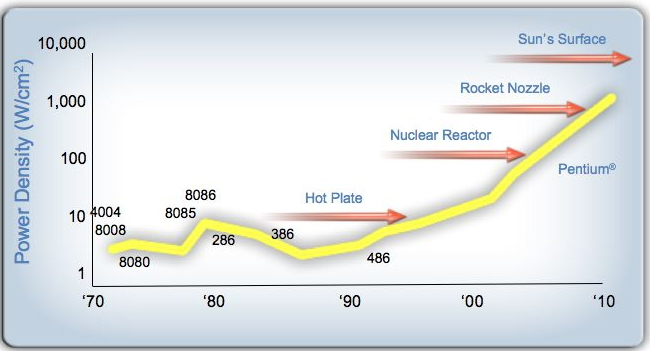\caption{Projected heat dissipation of a CPU if trends had continued -- this graph courtesy Pat Helsinger}
Figure 1.29 gives a dramatic illustration of the heat that a chip would give off, if single-processor trends had continued.
One conclusion is that computer design is running into a power wall , where the sophistication of a single core can not be increased any further (so we can for instance no longer increase ILP and pipeline depth ) and the only way to increase performance is to increase the amount of explicitly visible parallelism. This development has led to the current generation of multicore processors; see section 1.4 . It is also the reason GPUs with their simplified processor design and hence lower energy consumption are attractive; the same holds for FPGAs . One solution to the power wall problem is introduction of multicore processors. Recall equation eq:power , and compare a single processor to two processors at half the frequency. That should have the same computing power, right? Since we lowered the frequency, we can lower the voltage if we stay with the same process technology.
The total electric power for the two processors (cores) is, ideally, \[ \left. \begin{array}{c} C_{\mathrm{multi}} = 2C\\ F_{\mathrm{multi}} = F/2\\ V_{\mathrm{multi}} = V/2\\ \end{array} \right\} \Rightarrow P_{\mathrm{multi}} = P/4. \] In practice the capacitance will go up by a little over 2, and the voltage can not quite be dropped by 2, so it is more likely that $P_{\mathrm{multi}} \approx 0.4\times P$ [Chandrakasa:transformations] . Of course the integration aspects are a little more complicated in practice [Bohr:ISSCC2009] ; the important conclusion is that now, in order to lower the power (or, conversely, to allow further increase in performance while keeping the power constant) we now have to start programming in parallel.
1.8.4 Total computer power
crumb trail: > sequential > Further topics > Total computer power
The total power consumption of a parallel computer is determined by the consumption per processor and the number of processors in the full machine. At present, this is commonly several Megawatts. By the above reasoning, the increase in power needed from increasing the number of processors can no longer be offset by more power-effective processors, so power is becoming the overriding consideration as parallel computers move from the petascale (attained in 2008 by the IBM Roadrunner ) to a projected exascale.
In the most recent generations of processors, power is becoming an overriding consideration, with influence in unlikely places. For instance, the SIMD design of processors (see section 2.3.1 , in particular section 2.3.1.2 ) is dictated by the power cost of instruction decoding.
\SetBaseLevel 1
1.8.5 Operating system effects
crumb trail: > sequential > Further topics > Operating system effects
HPC practitioners typically don't worry much about the OS can be felt, influencing performance. The reason for this is the periodic interrupt , where the operating system upwards of 100 times per second interrupts the current process to let another process or a system daemon have a time slice .
If you are running basically one program, you don't want the overhead and jitter , the unpredictability of process runtimes, this introduces. Therefore, computers have existed that basically dispensed with having an OS to increase performance.
The periodic interrupt has further negative effects. For instance, it pollutes the cache and TLB . As a fine-grained effect of jitter, it degrades performance of codes that rely on barriers between threads, such as frequently happens in OpenMP (section 2.6.2 ).
In particular in financial applications , where very tight synchronization is important, have adopted a Linux kernel mode where the periodic timer ticks only once a second, rather than hundreds of times. This is called a tickless kernel .